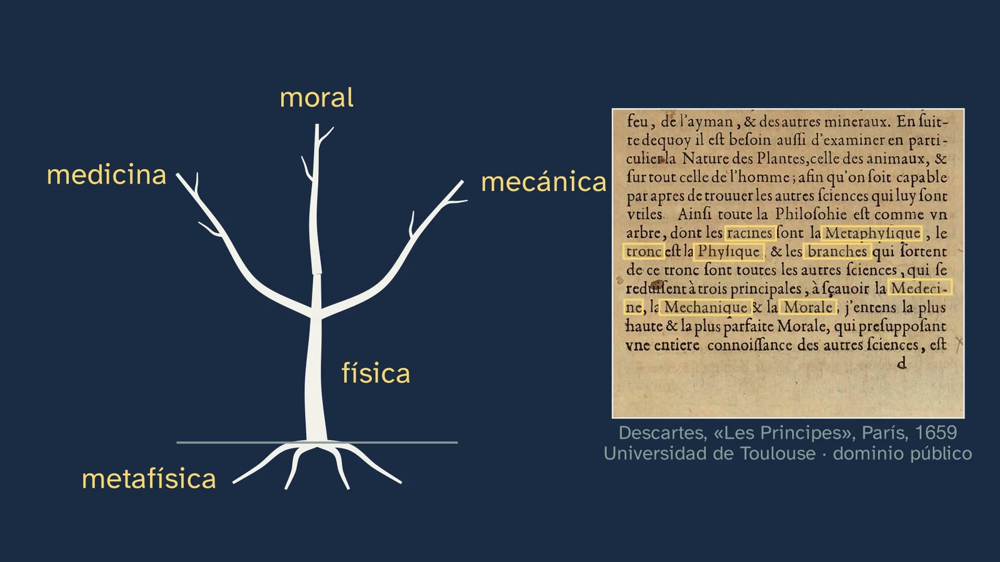
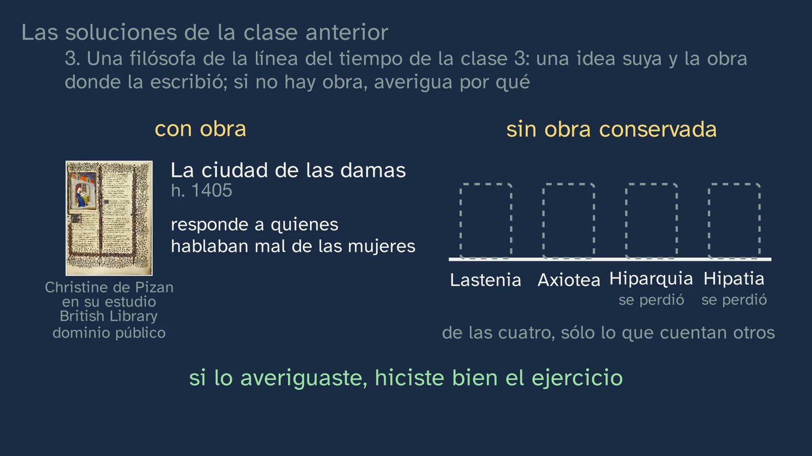
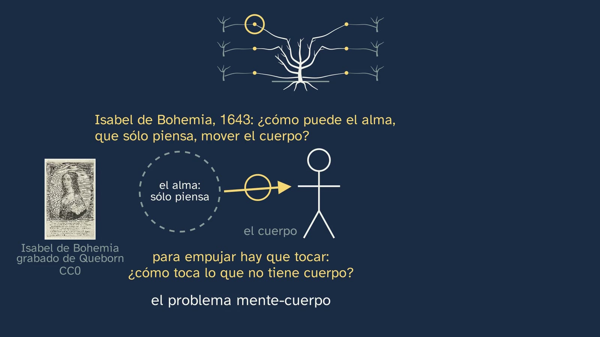
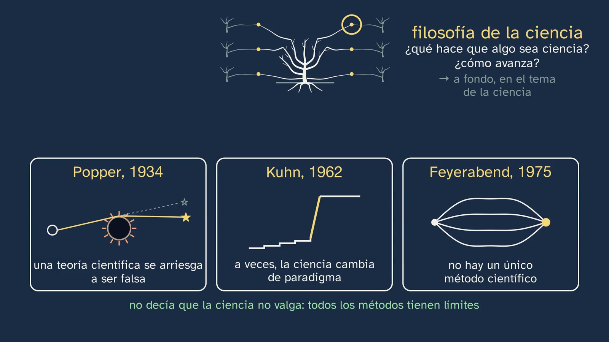
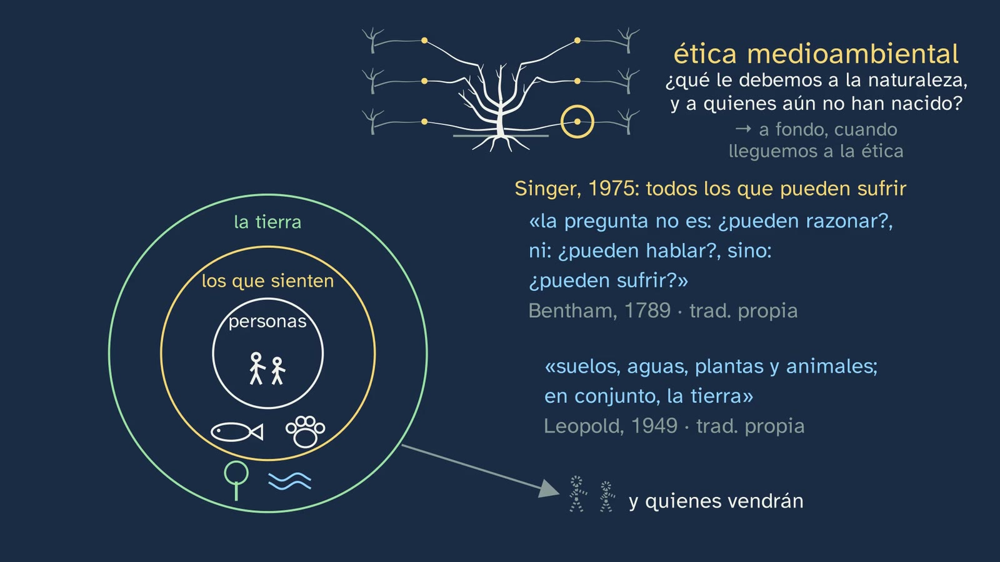
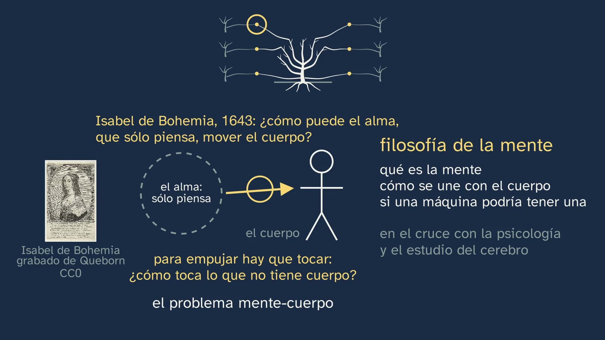

Las ramas de la filosofía, ayer y hoy
En pocas palabras
La clase responde a una pregunta doble: ¿en qué ramas se divide la filosofía, y por qué no son hoy las mismas que en el árbol de Descartes? Empieza por ese árbol, que publicó en la carta-prefacio de los Principios (París, 1647) y que se enseña en la página real de una edición de 1659: las raíces, la metafísica; el tronco, la física; las ramas, la medicina, la mecánica y la moral. La física, la medicina y la mecánica eran filosofía, y hoy son ciencias por su cuenta: Russell lo explicaba, «en parte», así: en cuanto sobre un asunto es posible un conocimiento definido, deja de llamarse filosofía (clase 1). ¿Se va quedando la filosofía sin ramas? El alumnado lo predice, y la clase contesta en tres pasos:
- Primero, la intuición. Ocho preguntas a una sola cosa, un asistente de inteligencia artificial, hacen crecer una a una las siete ramas tradicionales: metafísica (qué es real), teoría del conocimiento (qué podemos saber), lógica (cuándo se razona bien), ética (qué debemos hacer), política (cómo vivimos juntos), estética (qué es lo bello) y antropología (qué es el ser humano). La octava, «¿piensa?», se guarda para luego. Lo que separa las ramas es la pregunta, no la cosa: por eso, más que temas, son maneras de preguntar, y valen para un móvil, una ley o una canción. De paso, muchos nombres son más jóvenes que sus preguntas: Aristóteles nunca dijo «metafísica».
- El error, desmontado: las ramas no son cajones. ¿Es justo que una máquina decida a quién contrata una empresa? Es de la ética, pero también de la política y de la teoría del conocimiento.
- Cómo se ordenan: los tres grupos de saberes de Aristóteles (teóricos, prácticos y productivos), con el reparto de las ramas de hoy rotulado como de la clase y la lógica fuera, como herramienta de todas; y, al final, las cuatro preguntas de Kant, cada una con la rama que él le dio.
Entre medias, la respuesta a la predicción: a la filosofía le salen ramas nuevas en los cruces con las ciencias, con las que se fueron y con otras nuevas. Son seis, con el mismo peso, y cada una con una idea de verdad. En el cruce con la psicología, la medicina y la informática: la filosofía de la mente, con la pregunta de Isabel de Bohemia de 1643, que vuelve de la clase 3; la bioética, con los respiradores, el criterio de muerte del comité de Harvard (1968) y la norma que hoy la exige en Medicina; y la ética de la inteligencia artificial, con el tranvía de Philippa Foot, que hoy se discute a propósito de los coches sin conductor, y su cautela. Y en el cruce con la física, la lingüística y la ecología: la filosofía de la ciencia, con tres respuestas a una misma pregunta, qué hace que algo sea ciencia (Karl Popper, 1934: una teoría es científica si podría resultar falsa, como la predicción de Einstein que pudo fallar en el eclipse de 1919; Thomas Kuhn, 1962: a veces la ciencia cambia de paradigma; Paul Feyerabend, 1975: no hay un único método científico); la del lenguaje, con los luceros de Frege (1892: Venus, con dos nombres de la misma referencia y distinto sentido), el giro de Ludwig Wittgenstein, que vuelve de la clase 3 (1921 y 1953: de «los límites de mi lenguaje significan los límites de mi mundo» a «el significado de una palabra es su uso», en muchos casos) y las frases que hacen cosas de Austin (1955: «sí, quiero», «te lo prometo»); y la ética medioambiental, con el círculo de los que cuentan: las personas; los que pueden sufrir, con la pregunta de Bentham (1789) que retomó Peter Singer (1975); la tierra de Aldo Leopold (1949); y, en el tiempo, quienes aún no han nacido.
Objetivo. Al terminar, el alumnado sabrá nombrar las ramas tradicionales de la filosofía (lógica, teoría del conocimiento, metafísica, antropología, ética, política y estética) por la pregunta que hace cada una, y algunas áreas actuales, como la filosofía de la mente, la bioética, la ética de la inteligencia artificial, la filosofía de la ciencia, la del lenguaje o la ética medioambiental, cada una con su pregunta.
Es un mapa del curso, no un curso de cada rama: cada una se estudia despacio en su bloque del decreto (véase «La profundidad de 1.º»).
Las palabras.
- Rama, división, disciplina. El decreto habla de «divisiones tradicionales» y de «áreas actuales de investigación»; la clase dice «ramas» porque su hilo es el árbol de Descartes.
- Teoría del conocimiento. Es el nombre que usa la clase. En sus saberes, el decreto habla del «problema filosófico del conocimiento» y de «las teorías del conocimiento» (bloque B.1). Otros nombres: gnoseología y epistemología. Esta última tiene en español dos usos: como sinónimo de teoría del conocimiento, que es el sentido del inglés epistemology (la introdujo en la filosofía inglesa James Ferrier, en 1854) y el de varios vídeos divulgativos; y como filosofía de la ciencia, que es la definición del DLE: «Teoría de los fundamentos y métodos del conocimiento científico». El propio decreto usa una vez «epistemología», en la descripción de la competencia 7, junto a «ontología». La clase usa sólo «teoría del conocimiento»; si sale «epistemología», conviene explicar sus dos usos.
- Ética y moral. La clase las usa como equivalentes («la ética, la moral del árbol de Descartes», 4:29; Kant escribe Moral, 15:06), que es como se usan a menudo en la tradición. Algunos libros las distinguen; si sale, basta con decirlo, sin abrir ahí el debate.
- Filosofía primera. Lo que Aristóteles llamaba al saber que hoy llamamos metafísica.
Currículo
Real Decreto 243/2022, Filosofía (texto consolidado del BOE; la copia del laboratorio es idéntica, comprobada para la ficha del tema). Los saberes son del bloque A, «La filosofía y el ser humano», apartado 1, «La reflexión filosófica en torno a la propia filosofía». Los minutos son los del vídeo.
| Elemento | Qué dice el decreto | Dónde se trabaja |
|---|---|---|
| Saber básico (bloque A.1) | «[…] Las divisiones tradicionales de la filosofía y las áreas actuales de investigación. […]» | Toda la clase: las siete ramas por su pregunta (3:53 a 5:34), cómo se ordenan (Aristóteles, 7:04; Kant, 14:38) y seis áreas actuales, cada una con su historia o su documento (8:14 a 14:36) |
| Saber básico (bloque A.1) | «La filosofía en relación con otros campos del saber y la actividad humana.» | Sólo se apunta: las ciencias que se fueron del árbol (2:45) y los cruces donde brotan las ramas nuevas (8:14). Es el saber de la clase 5 |
| Competencia específica 1 | «Identificar problemas y formular preguntas acerca del fundamento, valor y sentido de la realidad y la existencia humana, a partir del análisis e interpretación de textos y otras formas de expresión filosófica y cultural, para reconocer la radicalidad y trascendencia de tales cuestiones […]». Su descripción pide para el asombro «un cauce formal y metodológico, un lenguaje específico y una tradición cultural» | Ocho preguntas a un mismo objeto (3:32). Los nombres de las ramas son parte de ese «lenguaje específico». El ejercicio 1 y la actividad: convertir una cosa cualquiera en preguntas de varias ramas |
| Competencia específica 6 | «Comprender las principales ideas y teorías filosóficas de los más importantes pensadores y pensadoras, mediante el examen crítico y dialéctico de las mismas y de los problemas fundamentales a los que estas responden […]» | Descartes (2:25), Aristóteles (5:36 y 7:04), Isabel de Bohemia (8:28), Popper (10:50), Kuhn (11:20), Feyerabend (11:36), Frege (12:15), Wittgenstein (12:40), Austin (13:03), Singer y Bentham (13:45), Leopold (14:03) y Kant (14:38), cada uno con su texto o su ejemplo |
| Competencia específica 7 | «Adquirir una perspectiva global, sistémica y transdisciplinar en el planteamiento de cuestiones fundamentales y de actualidad, analizando y categorizando sus múltiples aspectos […] e integrando información e ideas de distintos ámbitos disciplinares desde la perspectiva fundamental de la filosofía […]» | Una pregunta que cruza tres ramas (6:19); las ramas nuevas, en los cruces con la psicología, la medicina y la informática (8:14), y con la física, la lingüística y la ecología (10:37) |
| Criterio 1.1 | «Reconocer la radicalidad y trascendencia de los problemas filosóficos mediante su reconocimiento, análisis y reformulación en textos y otros medios de expresión tanto filosóficos como literarios, históricos, científicos, artísticos o relativos a cualquier otro ámbito cultural.» | Un móvil, una ley y una canción (5:29); una norma del BOE (9:49); el ejercicio 1 y la actividad |
| Criterio 6.1 | «Tomar consciencia de la riqueza e influencia del pensamiento filosófico identificando y analizando las principales ideas y teorías filosóficas en textos o documentos pertenecientes a ámbitos culturales diversos, así como poniéndolas en relación con experiencias, acciones o acontecimientos comunes y de actualidad.» | La página del árbol, en una edición de 1659 (2:25), el título impreso en 1497 (5:36), el informe de Harvard (9:25), la Orden de 2008 (9:49), las dos frases de Wittgenstein, tecleadas (12:46 y 12:59), y la pregunta de Bentham, tecleada (13:56); y, puestas en relación con experiencias y acontecimientos, el eclipse de 1919 (11:05), una boda y una promesa (13:12), los deberes con IA, una contratación hecha por una máquina y los coches sin conductor |
| Criterio 6.2 | «Adquirir y demostrar un conocimiento significativo de las ideas y teorías filosóficas de algunos de los más importantes pensadores y pensadoras de la historia, mediante su aplicación y el análisis crítico en el contexto de la práctica individual o colectiva de la indagación filosófica.» | Aristóteles, Descartes, Kant e Isabel de Bohemia, aplicados: el reparto de las ramas de hoy (7:44) y los ejercicios 2 y 3 |
| Criterio 7.1 | «Afrontar cuestiones y problemas complejos de carácter fundamental y de actualidad de modo interdisciplinar, sistemático y creativo, utilizando conceptos, ideas y procedimientos provenientes de distintos campos del saber y orientándolos y articulándolos críticamente desde una perspectiva filosófica.» | La bioética, la ética de la IA (9:09 a 10:36) y la ética medioambiental (13:25); la pregunta abierta (16:49) |
Las áreas actuales. El saber pide, con esas palabras, «las divisiones tradicionales de la filosofía y las áreas actuales de investigación», y la clase da seis. Tres tienen su nombre en el propio decreto, en otros bloques: «La filosofía de la mente» (B.2, junto al «debate en torno a la inteligencia artificial»), «La filosofía de la ciencia» (B.1) y la «Ética medioambiental» (C.1); la bioética y la ética de la IA caben en las «Éticas aplicadas» (C.1). «Filosofía del lenguaje» no figura en los saberes básicos (sólo «Conciencia y lenguaje», en A.2), pero es el nombre habitual de la disciplina. La descripción de la competencia 7 lo dice casi con las palabras de la clase: los «problemas ecosociales» se entienden mejor con un análisis en que «se integren datos y explicaciones científicas junto a concepciones filosóficas». Por qué la filosofía de la ciencia y la ética medioambiental se quedan abiertas. Las dos se cuentan con contenido de verdad, pero sin cerrarse: la filosofía de la ciencia da tres respuestas a una misma pregunta (Popper, Kuhn y Feyerabend) sin decidir entre ellas, y la ética medioambiental deja como pregunta hasta dónde llega el círculo de los que cuentan. Las dos tienen su sitio en el curso (en el canal, el tema 6, con la demarcación de la ciencia, y el tema 9, con las éticas aplicadas), y la clase lo dice: «lo veremos a fondo» (12:01 y 14:21). Aquí tienen que quedar como ramas, con su pregunta y una primera idea de cómo se contesta. La pregunta de Bentham y de Singer toca además un saber que el decreto nombra aparte, en C.1: «los derechos de los animales».
La profundidad de 1.º. Los saberes buscan «dotar al alumnado de una visión básica y de conjunto del rico y complejo campo de estudio que comprende la filosofía», y en cada caso «se podrá profundizar en unos más que en otros» (introducción de la materia). Esta clase es justo esa visión de conjunto: el mapa con el que el alumnado se orientará el resto del curso. El propio decreto se ordena en tres bloques, y conviene ponerlos al lado de los tres grupos de Aristóteles, porque no coinciden del todo:
| Bloque del decreto | Qué trae | Frente a los grupos de Aristóteles, tal como los reparte la clase (7:44) |
|---|---|---|
| A. La filosofía y el ser humano | A.1, la propia filosofía (esta clase); A.2, «El ser humano como sujeto y objeto de la experiencia filosófica»: la antropología | La clase pone la antropología en «saber»; el decreto la saca de «Conocimiento y realidad» y la pone en el primer bloque |
| B. Conocimiento y realidad | B.1, el conocimiento y la verdad, con «Nociones de lógica formal», la filosofía de la ciencia y «el problema del saber metafísico»; B.2, la realidad, con «El problema mente-cuerpo. La filosofía de la mente y el debate en torno a la inteligencia artificial» y «El problema filosófico de la existencia de Dios» | Es el grupo teórico, «saber». Pero la lógica, que la clase deja fuera del reparto como herramienta, el decreto la pone aquí, en B.1 |
| C. Acción y creación | C.1, «La acción humana: filosofía ética y política», con las «Éticas aplicadas» y la «Ética medioambiental»; C.2, «La reflexión filosófica en torno a la creación artística» | «Actuar» (C.1) y «hacer» (C.2), juntos en un mismo bloque |
Dos desajustes, pues: la antropología y la lógica. La introducción del decreto describe así los bloques: tras el primero, «otros dos bloques, uno dedicado al análisis de cuestiones básicas sobre el conocimiento y la realidad, y otro consagrado a los problemas relativos a la ética, la filosofía política y la estética». Y en la competencia 8 habla de la «doble dimensión teorética y práctica» de la filosofía y llama a la ética y a la filosofía política «las dos principales disciplinas prácticas de la filosofía». En el canal, cada rama vuelve en su tema: la lógica, en el 2; la antropología, en el 4; la teoría del conocimiento, en el 5; la filosofía de la ciencia, en el 6; la metafísica y la filosofía de la mente (con la pregunta «¿puede pensar una máquina?»), en el 7; la ética, del 8 al 11, con las éticas aplicadas en el 9; la política, en el 12 y el 13; y la estética, en el 14.

Lo que hay que traer.
- De la clase 1: Russell y las ciencias que se van, «en parte» (The Problems of Philosophy, 1912, p. 240); el saber más alto de Aristóteles, que «no es productivo» (Metafísica I 2, 982b11); los cuatro rasgos del saber filosófico.
- De la clase 2, la de la mesa: el árbol de Descartes y las cuatro preguntas de Kant, con su «en el fondo, todo esto se podría contar como antropología».
- De la clase 3: las preguntas de las cuatro épocas (son el ejercicio 3), la pregunta de Isabel de Bohemia a Descartes (1643), el tranvía de Philippa Foot (1967) y la frase de Wittgenstein sobre los límites del lenguaje (Tractatus 5.6), que hoy vuelve con su giro.
- De la ESO (Real Decreto 217/2022), Educación en Valores Cívicos y Éticos: «El pensamiento crítico y filosófico» y «La ética como guía de nuestras acciones» (bloque A); «Los códigos deontológicos. Las éticas aplicadas» y «Fines y límites éticos de la investigación científica. La bioética. El desafío de la inteligencia artificial» (bloque B). La palabra «bioética» puede sonarles; lo nuevo es verla como una rama, con su origen. El currículo estatal de la ESO no presenta la filosofía como disciplina ni sus ramas (algunas comunidades ofrecen una optativa de Filosofía en 4.º): para buena parte del alumnado, «metafísica» o «teoría del conocimiento» son palabras nuevas.
Lo que añaden las comunidades (sólo contraste, leído en sus boletines):
| Comunidad y norma | Qué añade | Dónde lo da la clase |
|---|---|---|
| Andalucía · Orden de 30 de mayo de 2023, BOJA núm. 104, 02/06/2023 | En el criterio 1.1, «utilizando adecuadamente el vocabulario técnico específico de las distintas ramas de la Filosofía para formular y analizar estos problemas» | Cada rama con su nombre y su pregunta (3:53 a 5:34); la tabla de la hoja; la actividad |
| Castilla y León · Decreto 40/2022, BOCYL núm. 190, 30/09/2022, p. 49838 | Junto a la relación con otros saberes: «La filosofía como teoría de la racionalidad. Racionalidad técnica, racionalidad teórica y racionalidad práctica como esferas de la reflexión filosófica». Y en su introducción (p. 49827): «Desde el siglo XVIII, una vez que las ciencias cobraron autonomía respecto a la filosofía, ésta quedó convertida antes que nada en una teoría de la racionalidad» | Los tres grupos de Aristóteles (7:04): teórico, práctico y productivo son, con otro nombre, la racionalidad teórica, la práctica y la técnica. Y las ciencias que se van del árbol (2:45) |
| Cataluña · Decret 171/2022, DOGC núm. 8758, 22/09/2022, annex 2, pp. 168–170 | Ordena todos los saberes con cuatro preguntas: «Què és l'ésser humà? / Què puc saber? / Què he de fer? / Com vivim junts?». Son tres de Kant y una cuarta sobre la convivencia: no pregunta qué me cabe esperar, ni nombra a Kant. Bajo la primera, «Identificació i classificació de les divisions tradicionals de la filosofia en l'abordatge de les problemàtiques humanes» | Las preguntas de Kant (14:38), con la diferencia a la vista: la tercera de Kant va a la religión; la cuarta catalana es, palabra por palabra, la pregunta que la clase da a la política: «cómo vivimos juntos» (4:40). La actividad «Tres repartos» lo trabaja |
| Galicia · Decreto 157/2022, DOG núm. 183, 26/09/2022 | «As grandes subdisciplinas da filosofía: os saberes filosóficos tradicionais» y «Novos temas e áreas actuais de investigación filosófica» | Las siete ramas y las seis áreas actuales |
| Madrid · Decreto 64/2022, BOCM núm. 176, 26/07/2022, p. 150 | Recoge el saber del decreto, literal: «Las divisiones tradicionales de la filosofía y las áreas actuales de investigación» | Toda la clase |
| Comunitat Valenciana · Decreto 108/2022 | No trae las divisiones de la filosofía | — |
Dónde lo traen los libros. De los doce proyectos editoriales que contrastamos con su unidad 1 a la vista, ocho traen las ramas: SM, Santillana, Oxford, McGraw Hill, Vicens Vives, Casals (2022), Casals «Radix» y Editex. Las agrupan en teóricas y prácticas Santillana, Vicens Vives (con los dos usos de la razón de Kant) y Editex (con un epígrafe, «Racionalidad teórica y práctica»). SM ordena el libro entero con las cuatro preguntas de Kant; tekman, en catalán, con las cuatro del currículo catalán. Áreas actuales: Santillana (las ciencias cognitivas) y Vicens Vives (filosofía del lenguaje, de la mente y de la historia). Casals (2022) pone las ramas en una tabla de preguntas.
Cómo está construida la clase
Capítulos del vídeo
Unos diecisiete minutos y medio (17:26), en nueve capítulos. Javier sale a cámara cuatro veces: al saludar (0:00), con el gancho (0:12), a mitad (6:59) y al despedirse (17:17). El hilo es un árbol, el de Descartes, que pierde ramas, gana las de hoy y echa brotes en los cruces. El decreto pide una enseñanza «en buena medida dialógica», que no sea «una mera exposición programática de temas y cuestiones» (introducción de la materia): por eso la clase no recita una lista de ramas, sino que plantea un problema (¿se queda la filosofía sin ramas?), lo hace predecir y lo resuelve con documentos.
| Capítulo | Qué pasa | Por qué así |
|---|---|---|
| Qué vamos a ver (0:00) | Javier saluda; el mapa del tema, con la cuarta clase recuadrada (0:05). Gancho a cámara (0:12): para Descartes, hace casi cuatro siglos, la física era filosofía; hoy ya no. ¿Qué le queda a la filosofía? | Saber dónde se está, y una pregunta con su quién, su cuándo y su dónde. |
| Las soluciones de la clase anterior (0:22) | Las tres, cada una con su enunciado: el orden de las cuatro preguntas de las épocas, cada una con su quién (los de Mileto, Sócrates, Averroes y Tomás de Aquino, 0:50, y Descartes); la pregunta de Isabel de Bohemia, crítica y racional, con su razonamiento dibujado: un alma, una flecha que empuja y un aro donde no llega a tocar («Guárdate la pregunta de Isabel: hoy vuelve a salir», 1:27); y la filósofa con su obra, con el enunciado entero (1:32), en dos estantes: en uno, Christine de Pizan, con la miniatura de su estudio, y su Ciudad de las damas, que «responde a quienes hablaban mal de las mujeres» (1:47); en el otro, cuatro huecos con nombre, Lastenia, Axiotea, Hiparquia e Hipatia (1:52), donde los libros de Hiparquia e Hipatia aparecen y caen, porque se perdieron. | Práctica espaciada, sin alargarla, y un anzuelo para Isabel. |
| El árbol de Descartes (2:07) | Recuperar: ¿qué puso en las raíces, en el tronco y en las ramas? (2:15; contador en 2:20). La página real, en una edición de 1659 (2:25), con cada palabra resaltada al decirla. La física, la medicina y la mecánica «eran parte de la filosofía» (2:49): se desprenden y se hacen ciencias; Russell, «en parte», con su idea tecleada (2:59); la psicología, a finales del siglo XIX (3:12). Predice (3:18; contador en 3:28): ¿se va quedando sin ramas, o le salen otras? | Lo que el alumno ya sabe, con su documento, plantea la pregunta de la clase sin enunciarla. |
| Una cosa, ocho preguntas (3:32) | Un asistente de IA en un móvil dibujado. Antes de contestar a la predicción, se dibujan las ramas de hoy: cada pregunta sale del móvil y hace crecer su rama (3:53 a 5:03), con la pregunta de fondo de cada una en la voz; la octava, «¿Piensa?», se guarda (5:03). Las siete ramas tradicionales, numeradas del 1 al 7 (5:09): sus preguntas «casi todas» eran ya griegas (una columna griega, «casi todas, ya los griegos», 5:18); más que temas, maneras de preguntar; el móvil se vuelve una ley y una canción (5:29). Los nombres, más jóvenes que sus preguntas (5:36): Aristóteles decía «filosofía primera»; en un estante, los rollos de la Física y, detrás, otros rollos con su etiqueta, el título que imprimió Aldo Manuzio en 1497 (5:47); una flecha horizontal, «los [libros] que van después de los de física» (5:51), y otra hacia arriba, «más allá de lo físico», siglos más tarde (5:56). | Un solo objeto con todas las preguntas: lo que cambia de una rama a otra es la pregunta, y el alumno lo ve sin que se lo digan. |
| ¿Una rama para cada pregunta? (6:02) | Para y piensa (6:05; contador en 6:13): ¿es justo que una máquina decida a quién contrata una empresa? ¿De qué rama es? El error (6:19): «No está mal», es de la ética, y la pregunta entra en un solo cajón; pero también de la política y de la teoría del conocimiento. «Insisto» (6:47): las ramas no son cajones, y de cada cajón abierto sale un hilo que sube hasta la pregunta. Javier, a mitad (6:59). | El error, con lo que tiene de razonable, desmontado con una pregunta de verdad. |
| Saber, actuar, hacer (7:04) | Aristóteles y sus tres grupos, según lo que buscan, con su frase de los Tópicos tecleada y un dibujo de tiza en cada panel: un ojo («saber por saber»), dos personas de la mano (la ética y la política) y una casa con una cruz (construir, curar). El saber más alto, que «no es productivo», de la clase 1 (7:28): teórico, la «filosofía primera». El reparto de las ramas de hoy, «nuestro, no suyo» (7:44); la lógica, fuera, con una flecha a cada panel: «la herramienta de todas» (8:06). | Cómo se ordenan, con el autor que lo hizo primero y con el aviso de lo que es de la clase. Recupera la clase 1. |
| Ramas nuevas (8:14) | La predicción, contestada: le salen otras, en los cruces con las ciencias, «con las que se fueron, y con otras nuevas». El mapa de los cruces tiene las seis desde el principio: el árbol en el centro; a la izquierda, la psicología, la medicina y la informática; a la derecha, la física, la lingüística y la ecología; los brotes de abajo salen del tronco. Cada rama se cuenta con su aro en el mapa. La filosofía de la mente: «¿piensa?» exige saber qué es pensar y cómo se une lo que piensa a algo material, y vuelve la pregunta de Isabel, dibujada (8:28); la rama, con sus tres preguntas (qué es la mente, cómo se une con el cuerpo, si una máquina podría tener una), en el cruce con la psicología y el estudio del cerebro (8:54). La bioética (9:09): los respiradores, con un corazón que late y un cerebro dañado sin remedio, dibujados; ¿viva o muerta?; el comité de Harvard (1968). El árbol de Descartes vuelve (9:35): la rama de la medicina se va y se hace ciencia, y un brote de cada árbol se junta en una yema, la bioética; y la norma que la exige en Medicina, con su página del BOE (9:49). La ética de la IA (9:54): «ahí vive también» la pregunta de la contratación (10:03); el tranvía de Foot ante el desvío, cinco personas en una vía y una en la otra, con su conductor en la cabina, «decide el conductor» (en el caso de Foot decide él; la persona junto a la palanca es la variante de Thomson), que se vuelve un coche (10:10); «Hay una diferencia» (10:22): el conductor desaparece, «nadie decide en el momento», y abajo un portátil: «lo deciden antes quienes lo programan»; y la cautela (10:30). La filosofía de la ciencia (10:37), en el cruce con la física y con todas las ciencias, que crece sobre todo en el siglo XX: qué hace que algo sea ciencia, y cómo avanza (10:45). Popper, 1934 (10:50): «una teoría es científica si podría resultar falsa»; dibujados, la Tierra, el Sol y una estrella, cuya luz, según la teoría de Einstein, se dobla junto al Sol el doble que con Newton (10:58); en el eclipse de 1919 la Luna tapa el Sol (11:05) y dos expediciones británicas lo miden: «pudo fallar, y no falló»; «que se arriesga» (11:14). Kuhn, 1962 (11:20): unos escalones, «poco a poco», y un salto en amarillo, «revolución: cambia el paradigma» (11:27), de Newton a Einstein. Feyerabend, 1975 (11:36), que había estudiado con Popper: «no hay un único método científico», con varios caminos de un punto a una misma meta; según él, avances como los de Galileo se saltaron las reglas (11:45); «no decía que la ciencia no valga» (11:52). Lo anterior se encoge en tres fichas hermanas, «tres respuestas a una misma pregunta» (11:58), y «a fondo, en el tema de la ciencia» (12:01). La filosofía del lenguaje (12:05), en el cruce con la lingüística: qué significan las palabras, y qué hacemos con ellas (12:11). Frege, 1892 (12:15): «el lucero de la mañana» y «el lucero de la tarde», con dos flechas a Venus, su referencia (12:25), y debajo de cada uno su sentido, «brilla al alba», «brilla al anochecer» (12:31): «misma referencia, distinto sentido», y «por eso, decir que el uno es el otro nos enseña algo» (12:38). Wittgenstein (12:40), «que ya oíste en la clase anterior», a la derecha: «los límites de mi lenguaje significan los límites de mi mundo», tecleada (Tractatus, 1921; 12:46); una flecha hacia abajo, «un giro» (12:57), y, de sus Investigaciones filosóficas, póstumas (1953), «el significado de una palabra es su uso en el lenguaje», tecleada (12:59), con la salvedad en la voz: «en muchos casos». Frege y Wittgenstein se encogen en dos fichas hermanas (13:03; en la de Wittgenstein, la frase de los límites y «1953: el significado de una palabra es su uso»), y Austin, 1955, llega en la tercera (13:07): frases que no describen nada, sino que hacen algo; «Sí, quiero», con dos anillos, «se está casando» (13:12); «Te lo prometo», «promete» (13:18); «con palabras también se hacen cosas» (13:21), y las tres fichas se iluminan. La ética medioambiental (13:25), en el cruce con la ecología: qué le debemos a la naturaleza, y a quienes todavía no han nacido (13:31); su gran pregunta, hasta dónde llega el círculo de los que cuentan (13:36). Un círculo que crece: las personas (13:40); los que sienten, con un pez y una huella (13:47); la pregunta de Bentham (1789), que retoma Singer (1975), tecleada (13:56); la tierra de Leopold (1949), con un árbol y agua (14:07); y una flecha hacia «quienes vendrán» (14:17); «a fondo, cuando lleguemos a la ética» (14:21). Cierre (14:26): el árbol con las seis y sus nombres, «cuando el mundo cambia, aparecen preguntas nuevas: en esos cruces, crecen ramas» (14:29). | Cada rama nueva con una persona, una fecha y una idea que se entiende, dibujada. Seis ramas con el mismo peso. Lo que la clase 3 contó (Isabel, Foot y la frase de Wittgenstein) vuelve con otro uso. Y tres respuestas a una misma pregunta, en tres fichas hermanas (en la ciencia y en el lenguaje), enseñan que una rama no es una doctrina, sino un debate. |
| Las cuatro preguntas de Kant (14:38) | Recuperar: «¿Las recuerdas? Intenta decirlas antes de seguir» (14:45; contador en 14:49, con cuatro cajas vacías); Javier las dice y se teclean en sus cajas (14:53). Cada una con su rama, como él la escribió (15:01): metafísica, moral, religión «pensada desde la razón» y antropología; su metafísica incluía lo que hoy llamamos teoría del conocimiento (15:21); y las tres primeras van a parar a la última: una llave bajo sus ramas y tres puntos que suben por una flecha hasta la cuarta caja (15:32). Recapitulación (15:38): «no hay un único reparto», con los tres en pequeño (los tres saberes de Aristóteles, el árbol de Descartes y las cuatro preguntas de Kant, «¿saber?, ¿deber?, ¿esperar?, ¿humano?»); el árbol de hoy, cada rama con su pregunta; las ciencias que se fueron y las seis ramas nuevas. | Otro reparto, para orientarse y para cerrar: el alumno ve tres maneras de ordenar lo mismo. |
| Para practicar y seguir pensando (16:08) | Tres ejercicios, cada uno en su ficha con un dibujo (16:12), la pregunta abierta (16:57; contador en 17:03) y la clase 5 (17:11). Despedida (17:17): «cada rama es una manera de preguntar. Y cuando el mundo cambia, le crecen ramas nuevas». | Las soluciones abren la clase 5. |


Plan de una sesión de 50 minutos
Pensado para que la actividad llegue cuando el alumnado ya ha visto el error de los cajones y los tres grupos de Aristóteles, y antes de las ramas nuevas.
| Minutos | Qué se hace |
|---|---|
| 0–2 | Sin vídeo: «Antes de empezar», en la hoja. Qué ramas conocen y qué creen que le ha pasado a la filosofía desde que la física era parte de ella. |
| 2–8 | Vídeo de 0:00 a 3:32 (si las soluciones de la clase 3 ya se corrigieron, se salta de 0:22 a 2:07). Paradas en 2:20 (el árbol: cada cual lo escribe antes de verlo) y en 3:28 (la predicción, por escrito: se recupera en 8:14). |
| 8–14 | Vídeo de 3:32 a 8:14. La tabla de las ocho preguntas de la hoja se rellena sobre la marcha. Parar en 6:13: un minuto en parejas, «¿de qué rama es?», antes de ver la respuesta. |
| 14–33 | La actividad: un objeto, siete preguntas (abajo). |
| 33–43 | Vídeo de 8:14 a 16:08. En 14:49, las cuatro preguntas de Kant, de memoria y por escrito, antes de oírlas. Al acabar, se relee la predicción: ¿quién acertó, y por qué? |
| 43–47 | Vídeo de 16:08 al final (17:26). La pregunta abierta, en voz alta o al diario filosófico. |
| 47–50 | «Al final de la clase», en la hoja. Los ejercicios, para casa. |
Si hay poco tiempo, el vídeo entero, con sus paradas (unos 23 minutos), y la actividad corta, «Tres repartos» (10 minutos), en lugar de la larga.
Si el ejercicio 3 de la clase anterior se corrige en el aula (5 minutos, antes del vídeo), sirve la estantería de la pizarra (1:32): dos estantes en la pizarra del aula, «con obra» y «sin obra conservada». Cada cual pone en el primero un «libro» con la filósofa que eligió, su obra y su año; Lastenia, Axiotea, Hiparquia e Hipatia van al segundo, como huecos con su nombre y con el porqué: lo que escribieron Hiparquia e Hipatia se perdió, y de las cuatro sólo sabemos lo que cuentan otros (véase la ficha de la clase 3, ejercicio 3).

Errores típicos y cómo se tratan
Son confusiones frecuentes que el diseño prevé; no hay, que sepamos, una investigación didáctica tan sólida sobre ellas como la de las ciencias. Varios se repetían en una revisión de vídeos divulgativos muy vistos, hecha para preparar la clase.
- «Las ramas son cajones: cada pregunta va en uno.» Es el error de la clase (6:19). Tiene algo de verdad: cada rama tiene su pregunta propia, y los nombres ayudan a orientarse. Pero una pregunta de verdad suele cruzar varias. «¿Es justo que una máquina decida a quién contrata una empresa?» es de la ética (si es justo), de la política (quién pone las reglas a esa máquina) y de la teoría del conocimiento (cómo sabe la máquina quién vale más). La clase no le quita la razón a quien dijo «ética» («No está mal»), lo repite avisando (6:47: «Insisto, porque es la idea de hoy») y, cuando vuelve la pregunta con la ética de la IA, dice que «ahí vive también» (10:03), no que sea sólo suya. La actividad lo pone a prueba: cuando dos grupos clasifican las mismas preguntas, los desacuerdos con razones no son un fallo, sino el error de los cajones a la vista.
- «Metafísica quiere decir "más allá de la física", y el título se lo puso Andrónico de Rodas.» Lo corrige la clase (5:36). Aristóteles nunca usó la palabra: a ese saber lo llamaba «filosofía primera» (Metafísica VI 1, 1026a24 y a30), y también «sabiduría» y «teológica». El título, τὰ μετὰ τὰ φυσικά, significa «los [libros] que van después de los de física» (DLE, «metafísico»; Stanford Encyclopedia, «Metaphysics»). Que lo pusiera Andrónico de Rodas en el siglo I a. C. es la atribución tradicional, no un hecho: hay quien lo adelanta a la escuela de Aristóteles (Moraux; Reiner). Y «más allá de lo físico» es una lectura posterior, de los neoplatónicos y de la Edad Media. Lo repetían cuatro de los vídeos revisados. La pizarra lo pone en un estante (5:36): los rollos de la Física y, detrás, los de la Metafísica; la flecha horizontal es la lectura de los editores, «después», y la vertical, la de siglos más tarde, «más allá». En el aula basta con preguntar qué dice cada flecha, y cuál es más antigua.
- «La filosofía es la madre de las ciencias», o su versión pesimista, «la filosofía se va quedando sin nada». En el árbol de Descartes, la física, la medicina y la mecánica no eran hijas de la filosofía: eran parte de ella, y se separaron (2:45). Russell lo explicaba así sólo «en parte» (1912, p. 240), y enseguida añade que es «only a part of the truth» (pp. 240–241). La psicología se separó tarde, y desde dentro: Wundt, que abrió en Leipzig en 1879 el primer laboratorio de psicología, era catedrático de filosofía. Que «la medicina salió de la filosofía» tampoco es historia: es la imagen de Descartes, porque en Grecia la medicina ya era un arte propio. La clase lo dice como suyo: «en el árbol de Descartes» (2:45, 9:35). Y la predicción tiene respuesta: le salen ramas nuevas (8:14).
- «Hay seis ramas (o siete, o veintidós), y hay que aprendérselas.» No hay un número fijo ni un reparto único: Aristóteles hacía tres grupos, Descartes dibujó un árbol con tres ramas principales, Kant hizo cuatro preguntas y el decreto ordena el curso en tres bloques. La clase lo dice al recapitular (15:39: «No hay un único reparto»). Lo que conviene aprender es la pregunta de cada rama: con ella se reconoce cualquier rama en cualquier lista.
- «Aristóteles dividía el saber en teórico y práctico», con la producción dentro de lo práctico. Son tres: «si todo pensamiento es o práctico, o productivo, o teórico» (Metafísica VI 1, 1025b25). Y la diferencia entre actuar y producir es suya: «ni actuar es producir, ni producir es actuar» (Ética a Nicómaco VI 4, 1140a1–6); el producir tiene su fin fuera de sí, y en el actuar «el propio obrar bien es el fin» (VI 5, 1140b6–7). Ninguno de los vídeos revisados daba los tres grupos.
- «Para Aristóteles, la lógica era el Órganon, la herramienta de todas las ciencias.» Su división de los saberes no menciona la lógica (Stanford Encyclopedia, «Aristotle»: «makes no mention of logic»), y el nombre Órganon, «instrumento», es posterior: llega de la Edad Media, «although not so characterized in these terms by Aristotle». Por eso la clase dice «en su reparto no aparece: sirve a todas, como una herramienta» (8:06), sin ponérselo en la boca. El decreto sí la cuenta entre los saberes (B.1, «Nociones de lógica formal»).
- Kant, mal repartido. Hay quien pone «¿qué me cabe esperar?» antes que «¿qué debo hacer?», o quien reparte la primera entre varias disciplinas de hoy, como la teoría del conocimiento. Kant escribe Metaphysik (Lógica, Ak. IX, 25). La clase lo dice como él (15:01) y glosa después (15:21): para Kant, la metafísica incluía examinar lo que podemos conocer (en la Crítica de la razón pura, A841/B869, «metafísica» puede llamarse toda la filosofía pura, crítica incluida). Y la tercera va a la religión, «pensada desde la razón». Dicho a secas, un alumno entendería que la religión es una rama de la filosofía, justo antes de la clase 5, que las distingue.
- «Isabel de Bohemia fue la primera en plantear el problema mente-cuerpo», o lo contrario: contarlo sin ella, como un problema sin dueño. Es una de sus formulaciones más claras y célebres (Stanford Encyclopedia, «Mental Causation»), y así lo dice la clase («una de las formas más famosas», 8:49). Pero Gassendi ya había objetado algo parecido en las Quintas objeciones a las Meditaciones, en 1641 (Internet Encyclopedia, «Descartes: Mind-Body Distinction»; Richardson, 1982). Project Vox, con Shapiro, la llama «plausibly the first»: probablemente, no seguro.
- «La bioética la inventó Potter en 1971.» La palabra la usó primero Fritz Jahr, en 1927 («Bio-Ethik», en la revista Kosmos), para una ética de nuestras relaciones con los animales y las plantas. Van Rensselaer Potter la volvió a acuñar por su cuenta en un artículo de 1970 y en un libro de 1971; y en 1971, en Georgetown, André Hellegers la usó para la ética de la medicina, el sentido que se impuso (Reich, 1994). La clase no nombra a ningún inventor: «por esos años se extendió una palabra» (9:29).
- «El dilema del tranvía es el problema ético de los coches sin conductor.» Se discute de verdad a propósito de esos coches (Stanford Encyclopedia, «Ethics of Artificial Intelligence and Robotics»; Nyholm y Smids, 2016). Pero muchos dudan de que un coche real tenga que resolverlo nunca: para ellos importa más que haya los menos choques posibles, cómo se reparte el riesgo y quién responde (Nyholm y Smids, 2016; De Freitas y otros, 2020). La clase lo dice (10:30) y subraya la diferencia que más enseña: en el tranvía de Foot decide el conductor en el momento; en el coche, lo deciden antes quienes lo programan.
- «Una teoría científica es una teoría demostrada.» Para Popper es casi al revés: lo que la hace científica es que podría resultar falsa, que se arriesga. Una prueba superada no la demuestra: una prueba así puede refutar una teoría, escribe, pero nunca establecerla (Unended Quest, § 8, p. 39). La clase lo dice con cuidado: «pudo fallar, y no falló» (11:09), no «quedó demostrada». Y las medidas de 1919 eran poco precisas (Sobral, 1,98″ ± 0,12″; Príncipe, 1,61″ ± 0,30″, frente a los 1,75″ de Einstein): bastaron para descartar el valor de Newton, y la precisión llegó después (véase «Para ampliar»).
- «Para Feyerabend, en la ciencia todo vale.» El «anything goes» está en su libro (1975, pp. 27–28), pero en 1987 aclaró que no es un principio suyo, sino «la exclamación aterrada de un racionalista que mira la historia más de cerca» (Against Method, 3.ª ed., p. vii), y que lo que sostiene es que todas las reglas tienen sus límites, no que haya que trabajar sin reglas (cap. 18, pp. 230–231). La clase lo dice: «No decía que la ciencia no valga: decía que todos los métodos tienen límites» (11:52). Y a Kuhn tampoco hay que hacerle decir que la ciencia cambia «de golpe»: una revolución, escribe, nunca se completa «de la noche a la mañana» (1962, p. 7). El salto de la pizarra (11:27) es un cambio de marco, no de velocidad.


Preguntas y soluciones
Dentro del vídeo
- ¿Recuerdas qué puso Descartes en las raíces, en el tronco y en las ramas? (2:15; la pausa, en 2:20). En las raíces, la metafísica; en el tronco, la física; en las ramas, «todas las demás ciencias, que se reducen a tres principales»: la medicina, la mecánica y la moral, «la más alta y la más perfecta», que para él es el último grado de la sabiduría. Y los frutos no se cogen de las raíces ni del tronco, sino de las puntas de las ramas (carta-prefacio de los Principios, 1647; AT IX-2, 14–15). Lo que saldrá: confundir el tronco con las raíces, o meter en el árbol las matemáticas, la biología o el derecho (dos vídeos revisados lo dibujan así).
- Predice: con tantas ramas que se van, ¿qué le pasa a la filosofía? ¿Se va quedando sin ramas, o le salen otras? (3:18; la pausa, en 3:28). Vale cualquier respuesta razonada. La de la clase llega en 8:14: le salen otras, en los cruces con las ciencias. Merece la pena valorar a quien vea las dos cosas a la vez: unas ramas se van, como dice Russell, y aparecen preguntas nuevas. Ojo: las ocho preguntas del móvil (3:32) no contestan todavía a la predicción; dibujan las ramas que ya tenía, cuyas preguntas «casi todas» se las hacían los griegos (5:09).
- Las ocho preguntas al asistente (3:53 a 5:03; sin pausa, pero la hoja las recoge en una tabla). ¿Qué es, en el fondo? Metafísica: qué es real. Si te dice algo, ¿cómo sabes que es verdad? Teoría del conocimiento: qué podemos saber, y cómo. ¿Está bien razonado, o sólo suena bien? Lógica: cuándo se razona bien. ¿Debes usarlo para hacer los deberes? Ética: qué debemos hacer. ¿Quién decide lo que puede hacer, y lo que no? Política: cómo vivimos juntos, y quién manda. Si pinta un cuadro, ¿es arte? Estética: qué es lo bello, y qué es el arte. Si escribe como nosotros, ¿qué nos hace humanos? Antropología: qué es el ser humano. ¿Piensa? Se guarda: es la filosofía de la mente (8:28).
- Para y piensa: ¿es justo que una máquina decida a quién contrata una empresa? ¿De qué rama es? (6:05; la pausa, en 6:13). De varias: la ética (si es justo), la política (quién pone las reglas a esa máquina) y la teoría del conocimiento (cómo sabe la máquina quién vale más). Caben otras, si se razonan: la lógica (¿son válidas las inferencias con que decide?) o la antropología (¿qué es «valer» una persona?). Criterio: una razón por cada rama. Lo que saldrá: «de la ética», sola, que no está mal (la clase lo dice), o «de la informática», que trata de la técnica pero no contesta si algo es justo.
- ¿Recuerdas lo que vimos en la primera clase? (7:28). Que el saber más alto de Aristóteles «no es productivo» (Metafísica I 2, 982b11): es teórico, busca saber por saber, y es el que él llamaba «filosofía primera».
- ¿Qué hace que algo sea ciencia, y cómo avanza? (10:45; es la pregunta de la rama, sin pausa: la clase da tres respuestas y la deja para el tema de la ciencia, 12:01). Popper (1934): una teoría es científica si podría resultar falsa; la de Einstein decía cuánto se doblaría la luz de una estrella al pasar junto al Sol, el doble que con Newton, y en el eclipse de 1919 pudo fallar y no falló. Kuhn (1962): la ciencia no siempre avanza poco a poco; a veces cambia su manera entera de mirar, su paradigma, como de Newton a Einstein. Feyerabend (1975): no hay un único método científico, y todos tienen sus límites. Son «tres respuestas a una misma pregunta» (11:58), y la clase no elige entre ellas. Lo que saldrá: «científico es lo que está demostrado», justo lo contrario de Popper (error 11), y «Feyerabend decía que todo vale» (error 12).
- ¿Qué significan las palabras, y qué hacemos con ellas? (12:11; sin pausa). Tres respuestas, en tres fichas hermanas. Frege: dos nombres pueden tener la misma referencia, la cosa, y distinto sentido, el modo en que nos la presentan. El lucero de la mañana y el de la tarde son Venus, y por eso «el lucero de la mañana es el lucero de la tarde» enseña algo, y «el lucero de la mañana es el lucero de la mañana», no («Über Sinn und Bedeutung», 1892, pp. 25–27). Wittgenstein, en dos tiempos: en el Tractatus (1921), «los límites de mi lenguaje significan los límites de mi mundo» (5.6), la frase de la clase 3; y en las Investigaciones filosóficas (1953), un giro: en muchos casos, el significado de una palabra es su uso en el lenguaje (§ 43). Para saber qué significa una palabra, se mira cómo se usa: así, las dos mitades de la pregunta se acercan. Austin: hay frases que no describen nada, sino que hacen algo: quien dice «sí, quiero» en su boda se está casando, y quien dice «te lo prometo», promete. Lo que saldrá: «son sinónimos»; no lo son: nombran lo mismo, pero no significan lo mismo. «Para Wittgenstein, una palabra significa lo que cada uno quiera»: no; habla del uso en el lenguaje, el que compartimos, y él mismo avisa de que no vale para todos los casos. Y «con decir "sí, quiero" ya estás casado»: hace falta el sí de los dos y que las circunstancias sean las apropiadas (véase «Para ampliar»).
- ¿Qué le debemos a la naturaleza, y a quienes todavía no han nacido? ¿Hasta dónde llega el círculo de los que cuentan? (13:31 y 13:36; sin pausa: «lo veremos a fondo cuando lleguemos a la ética», 14:21). Pregunta abierta: el profesor no da su veredicto. La clase dibuja las respuestas como círculos: las personas; todos los que pueden sufrir (Singer, 1975, con la pregunta de Bentham, 1789: «la cuestión no es: ¿pueden razonar?, ni: ¿pueden hablar?, sino: ¿pueden sufrir?»); la tierra, con sus suelos, aguas, plantas y animales (Leopold, 1949); y, en el tiempo, quienes vendrán. Una buena respuesta dice hasta dónde llevaría el círculo, y por qué ahí. Lo que saldrá: leer los círculos como una historia que avanza sola, o como un progreso que todos aceptan; no lo son (véase «Para ampliar»).
- Las cuatro preguntas de Kant, de la clase de la mesa: ¿las recuerdas? Intenta decirlas antes de seguir (14:45; la pausa, en 14:49). ¿Qué puedo saber? ¿Qué debo hacer? ¿Qué me cabe esperar? ¿Qué es el ser humano? (Lógica, 1800, Ak. IX, 25; y su carta a Stäudlin, de 1793, Ak. XI, 429).

De la hoja del alumnado
- Antes de empezar. No hay respuesta correcta: es su punto de partida, y lo releen al final. Lo que suele interesar comparar es la lista de ramas del principio con la tabla, y la frase sobre la física con la respuesta de la clase: la física se fue, pero a la filosofía le crecen ramas nuevas.
- ¿Qué puso Descartes en su árbol, y dónde estaban la física, la medicina y la mecánica? Véase arriba: la física era el tronco; la medicina, una de las tres ramas principales, con la mecánica. Las tres se hicieron ciencias por su cuenta.
- ¿Por qué, según Russell, un asunto deja de llamarse filosofía? Porque, en cuanto sobre él es posible un conocimiento definido, se convierte en una ciencia aparte; y la psicología se separó a finales del siglo XIX. Para una nota alta: Russell dice que esto lo explica sólo «en parte».
- ¿Por qué, más que temas, las ramas son maneras de preguntar? Porque todas las preguntas eran sobre la misma cosa, el asistente, y cada una hizo crecer una rama distinta: lo que cambia es lo que se pregunta, y por eso cada rama vale para cualquier cosa, un móvil, una ley o una canción.
- ¿Qué quiere decir el título griego de la Metafísica, qué dicen las dos flechas del estante y cómo llamaba Aristóteles a ese saber? «Los libros que van después de los de física»: es la flecha horizontal, la de los editores, que pusieron esos rollos detrás de los de la Física. La vertical, «más allá de lo físico», es una lectura de siglos después. Él lo llamaba «filosofía primera».
- ¿Cuáles son los tres grupos de Aristóteles, y por qué se queda fuera la lógica? Teóricos (saber por saber), prácticos (cómo actuar: la ética y la política) y productivos (hacer algo: construir una casa, curar). En el reparto de la clase: en «saber», la metafísica, la teoría del conocimiento y la antropología; en «actuar», la ética y la política; en «hacer», la estética. La lógica no aparece en su división: sirve a todas, como herramienta. Para una nota alta: que el reparto de las ramas de hoy es de la clase, no de Aristóteles.
- ¿Dónde le salen ramas nuevas a la filosofía? En los cruces con las ciencias: la filosofía de la mente, con la psicología y el estudio del cerebro (qué es la mente, cómo se une con el cuerpo, si una máquina podría tener una); la bioética, con la medicina (¿está viva o muerta una persona cuyo corazón late gracias a un respirador?); la ética de la inteligencia artificial, con la informática (¿es justo que una máquina decida a quién se contrata?, ¿qué debe hacer un coche sin conductor?). La filosofía de la ciencia, con la física y las demás ciencias (¿qué hace que algo sea ciencia, y cómo avanza?); la del lenguaje, con la lingüística (¿qué significan las palabras, y qué hacemos con ellas?); y la ética medioambiental, con la ecología (¿qué le debemos a la naturaleza, y a quienes todavía no han nacido?).
- ¿Qué tienen que ver los respiradores y la carrera de Medicina con la bioética? Con los respiradores, el corazón podía seguir latiendo con el cerebro dañado sin remedio, y apareció una pregunta nueva: ¿viva o muerta? En 1968, un comité de Harvard propuso un criterio nuevo de muerte. Y hoy la norma que regula los estudios de Medicina en España exige aprender «los fundamentos de la ética médica. Bioética».
- La filosofía de la ciencia: ¿qué respondió Popper, y qué pasó en el eclipse de 1919? ¿Qué es un paradigma, según Kuhn? ¿Y qué defendió Feyerabend? Popper: una teoría es científica si podría resultar falsa. La de Einstein decía cuánto se doblaría la luz de una estrella al pasar junto al Sol, el doble que con Newton; en el eclipse de 1919, dos expediciones británicas lo midieron: pudo fallar, y no falló. Kuhn: un paradigma es la manera entera de mirar de una ciencia, y cuando cambia hay una revolución científica, como de Newton a Einstein. Feyerabend: que no hay un único método científico, porque todos tienen sus límites; no que la ciencia no valga. Para una nota alta: que son tres respuestas a una misma pregunta, y que la clase no elige entre ellas.
- Los luceros, el giro de Wittgenstein y el «sí, quiero». Nombran lo mismo, Venus, que es su referencia, pero nos lo presentan de dos maneras, el que brilla al alba y el que brilla al anochecer: tienen distinto sentido, y por eso decir que el uno es el otro enseña algo. En el Tractatus, Wittgenstein decía que los límites de mi lenguaje significan los límites de mi mundo; en las Investigaciones filosóficas dio un giro: en muchos casos, el significado de una palabra es su uso, y para saber qué significa hay que mirar cómo se usa. Quien dice «sí, quiero» en su boda no describe nada: se está casando. Con las palabras también se hacen cosas. Para una nota alta: la salvedad del propio Wittgenstein, «para una gran clase de casos», no para todos; u otro ejemplo de Austin, como bautizar un barco o apostar.
- El círculo de los que cuentan. Es la pregunta de la ética medioambiental: hasta dónde llega. Durante siglos, la ética miró sobre todo a las personas. Singer (1975), con la pregunta de Bentham (1789), propuso tener en cuenta a todos los que pueden sufrir; y Leopold (1949) ya había ido más lejos: los suelos, las aguas, las plantas y los animales, en conjunto, la tierra. En el tiempo, el círculo llega a quienes aún no han nacido. Para una nota alta: que Leopold escribió antes que Singer, así que el círculo no es una historia en orden.
- ¿En qué se diferencia el tranvía del coche sin conductor? En el tranvía de Foot decide el conductor en el momento; en el coche lo deciden antes, en frío, quienes lo programan. Para una nota alta, la cautela: muchos expertos dudan de que un coche real se encuentre nunca un dilema tan limpio.
- ¿Qué rama da Kant a cada pregunta? Metafísica, moral, religión y antropología. «Pensada desde la razón» quiere decir que no parte de una revelación: su libro se titula La religión dentro de los límites de la mera razón (1793).
- Las tablas, la predicción, el «Para y piensa» y las cuatro preguntas de Kant de memoria: véase «Dentro del vídeo». En clase: véase la actividad.
- Para ti. No tienen solución: son para pensarlas, y pueden ir al diario filosófico. La del asistente de inteligencia artificial, mejor por escrito, sin que nadie tenga que decir en voz alta lo que hace.
Para practicar (las soluciones abren la clase 5)
-
Elige una cosa de tu día a día, como tu ropa o el dinero, y hazle tres preguntas de tres ramas distintas. Hay muchas buenas respuestas. Dos ejemplos:
- El dinero. Metafísica: ¿qué es, en el fondo, un billete: un papel, o una promesa en la que todos creemos? Ética: ¿debo devolver el cambio que me han dado de más en una tienda? Política: ¿quién debe decidir cuánto paga cada uno de impuestos? Antropología: ¿por qué los seres humanos inventamos el dinero, y qué dice eso de nosotros? Lógica: «todo lo caro es bueno; esto es caro; luego es bueno»: ¿está bien razonado? (Es un razonamiento válido con una premisa falsa: la lógica separa las dos cosas, y es el tema 2.)
- La ropa. Estética: ¿qué hace bonita una prenda: la prenda, o quien la mira? Ética: ¿debo comprar ropa muy barata si sospecho que se ha hecho en malas condiciones? Política: ¿puede un instituto imponer un uniforme? Antropología: ¿por qué nos vestimos aunque no haga frío, y qué decimos con la ropa? Metafísica: si a una chaqueta le cambio una pieza tras otra, ¿sigue siendo la misma chaqueta?
Criterios: tres preguntas, de tres ramas distintas; en cada una se reconoce la pregunta de fondo de su rama; y ninguna se contesta con un dato (¿cuánto cuesta?, ¿quién la inventó?). Para una nota alta, una pregunta que cruce dos ramas y lo diga. Lo que saldrá: preguntas con el nombre de la rama dentro («¿es ético…?»), que todavía no son una pregunta; la lógica entendida como «lo lógico», el sentido común, cuando pregunta si un razonamiento es correcto; y la estética como gusto personal («¿te gusta?»), cuando pregunta qué hace que algo sea bello.
-
¿En qué saber de Aristóteles pondrías cada una de estas? Decidir si cuentas un secreto que te confiaron. Aprender a hacer una mesa. Y estudiar por qué brillan las estrellas. Ningún caso va en el sitio de su saber en «saber, actuar, hacer», para que el orden del enunciado no dé la solución.
- Decidir si cuentas un secreto: actuar, práctico. Lo que importa es la propia acción, obrar bien; no queda ningún producto fuera de ella (Ética a Nicómaco VI 5, 1140b6–7).
- Aprender a hacer una mesa: hacer, productivo. El fin está fuera de quien la hace: la mesa. Es el ejemplo de Aristóteles con la casa (Metafísica VI 2, 1026b6–10; Ética a Nicómaco VI 4, 1140a7).
- Estudiar por qué brillan las estrellas: saber, teórico. Se busca saber, por saber. Para Aristóteles, la astronomía iba con las matemáticas, entre las ciencias teóricas (Metafísica VI 1, 1026a26); hoy, con la física.
Criterios: cada una en su grupo, con la razón de dónde está el fin: en saber, en la propia acción o en una cosa hecha. Lo que saldrá: «aprender a hacer una mesa» en «saber», por el verbo «aprender»; y «decidir si cuentas un secreto» en «saber», porque hay que saber qué está bien. Las dos trampas enseñan algo: hay un saber de cómo se hace (el arte, la técnica) y un saber de cómo se actúa (la prudencia), y ninguno de los dos es saber por saber.
-
Las cuatro preguntas de la línea del tiempo de la clase anterior: ¿de qué rama es cada una?
- ¿De qué está hecho todo? De la metafísica: qué es real. Y hoy la contesta también la física: es una de las preguntas que se llevaron las ciencias que se fueron del árbol (2:45).
- ¿Cómo hay que vivir? De la ética. Valen también, si se razonan, la política (para Aristóteles, la ética es «una especie de política») y la antropología.
- ¿Cómo encajan la fe y la razón? No tiene una casilla única entre las siete. Valen la teoría del conocimiento (son dos fuentes de saber: ¿qué pasa cuando parecen chocar?), la metafísica (habla de Dios: el decreto pone «El problema filosófico de la existencia de Dios» en B.2, y «las creencias religiosas», entre los otros modos de saber, en B.1) o, con Kant, la religión pensada desde la razón.
- ¿Qué puedo saber con certeza? De la teoría del conocimiento. Para una nota alta: Kant, a su primera pregunta, le daba la metafísica.
Criterios: una rama con su razón para cada pregunta; se aceptan varias si se justifican, y para una nota alta, que alguien note que la de la fe y la razón cruza varias: es la idea de la clase, otra vez. Lo que saldrá: «la fe y la razón» en la ética, por confundir la religión con la moral. Enlaza con la clase 5.

Para abrir la clase 5: las soluciones, en corto
Lo que dirá Javier al empezar la clase siguiente, con el mismo tono que las soluciones de esta (0:22):
- «La primera pedía elegir una cosa de tu día a día y hacerle tres preguntas de tres ramas distintas. Por ejemplo, el dinero. ¿Qué es, en el fondo: un papel, o una promesa en la que todos creemos? Metafísica. ¿Debo devolver el cambio que me han dado de más? Ética. ¿Quién decide cuánto paga cada uno de impuestos? Política. Vale cualquier cosa, si cada pregunta es de verdad de su rama.»
- «La segunda: decidir si cuentas un secreto que te confiaron es actuar: práctico, porque lo que importa es la propia acción. Aprender a hacer una mesa es hacer: productivo, porque el fin está fuera de ti, en la mesa. Y estudiar por qué brillan las estrellas es saber, por saber: un saber teórico.»
- «Y la tercera pedía la rama de las cuatro preguntas de la línea del tiempo. De qué está hecho todo es de la metafísica, y hoy también de la física. Cómo hay que vivir, de la ética. Qué puedo saber con certeza, de la teoría del conocimiento; Kant decía metafísica. Y cómo encajan la fe y la razón no cabe en un solo cajón: toca la teoría del conocimiento, la metafísica y, con Kant, la religión pensada desde la razón.»
Para seguir pensando. Cuando el mundo cambia, le crecen ramas a la filosofía. ¿Qué cambio de hoy crees que hará crecer la próxima? ¿Y qué pregunta haría esa rama? (16:57; la pausa, en 17:03). No tiene respuesta de libro, y ni el vídeo ni esta ficha dan la suya. Algunas pistas para orientar el debate sin cerrarlo:
- Seguir el patrón de la clase. En la bioética y en la ética de la IA hubo un cambio (los respiradores, las máquinas que deciden), una pregunta que antes no se hacía y una ciencia con la que cruzarse. Una buena respuesta dice las tres cosas, y por qué esa pregunta no se contesta sólo con datos.
- El decreto ya nombra preguntas nuevas. «La cuestión de las realidades virtuales» (B.2), «La desinformación y el fenómeno de la "posverdad"» (B.1), «La especulación en torno al transhumanismo» (A.2) y «los derechos de los animales» (C.1). ¿Alguna será una rama propia, o son preguntas nuevas para ramas viejas? La ética medioambiental, que la clase ya presenta (13:25), es un buen ejemplo de pregunta nueva que acabó en rama.
- ¿Rama nueva o pregunta nueva? No todo cambio hace crecer una rama: a veces basta con que una rama vieja se haga una pregunta nueva. ¿Qué haría falta para hablar de una rama propia: un nombre, especialistas, una norma que la exija, como la bioética en Medicina?
- El profesor modera y no da su veredicto. Vale cualquier respuesta con su razón. La pregunta vuelve en la clase 7 (la filosofía en la era de la IA).
Actividad: un objeto, siete preguntas
Unos 19 minutos, en grupos de tres o cuatro, después de ver el vídeo hasta 8:14. Trabaja el criterio 1.1 («reformulación» de los problemas), el 7.1 y, con el diálogo en grupo, el 4.1. Es la técnica de la clase, un mismo objeto con muchas preguntas, pero hecha por el alumnado, y con una prueba a ciegas que pone a la vista el error de los cajones. Como todo lo práctico del canal, se propone: cada profesor la adapta a su grupo.
Material: una tarjeta con un objeto por grupo (un semáforo, un examen, una zapatilla de marca, una foto retocada de un anuncio, un mapa, una estatua en una plaza, un reloj, una receta familiar); siete papelitos o pósits por grupo; en la pizarra, tres columnas, «saber», «actuar» y «hacer», y un margen rotulado «herramienta».
- Predicción (2 minutos). Cada cual escribe, sin hablar: ¿cuántas de las siete ramas caben en vuestro objeto?
- Las preguntas (6 minutos). El grupo escribe siete preguntas sobre su objeto, una por rama, cada una en un papelito. Dos reglas: el nombre de la rama no puede aparecer en la pregunta («¿es ético…?» no vale), y la pregunta no se puede contestar con un dato. Detrás, a lápiz, la rama que pensaban.
- A ciegas (5 minutos). Los grupos se cambian los papelitos. Cada grupo pone una rama a cada pregunta del otro, sin mirar detrás. Después, se comparan: ¿en cuántas coinciden? Donde no, ¿quién tiene razón? Pueden tenerla los dos: una pregunta de verdad cruza varias ramas.
- El reparto de Aristóteles (4 minutos). Cada grupo pega sus preguntas en las tres columnas de la pizarra, y las de lógica en el margen. ¿Dónde han caído la estética y la antropología? ¿Coincide con el reparto de la clase (7:44)?
- Cierre (2 minutos). Cada cual escribe una pregunta sobre su objeto que cruce al menos dos ramas, y cuáles. Y la compara con su predicción.
Lo que se puede esperar. Un ejemplo con el semáforo:
| Rama | Una pregunta |
|---|---|
| Metafísica | ¿El rojo está en la luz o en mis ojos? |
| Teoría del conocimiento | Si lo veo en verde, ¿puedo estar seguro de que lo está? |
| Lógica | «Si el semáforo está en rojo, los coches paran; los coches han parado; luego está en rojo.» ¿Está bien razonado? (No: han podido parar por otra cosa.) |
| Ética | ¿Debo esperar en rojo a las tres de la mañana, sin un coche a la vista? |
| Política | ¿Quién decide cuánto dura el verde para los peatones, y con qué derecho? |
| Estética | ¿Puede ser bello un semáforo? ¿Qué lo haría feo? |
| Antropología | ¿Por qué obedecemos a una luz, y qué dice eso de nosotros? |
En el paso 3, los desacuerdos más esperables, por cómo son las preguntas, están entre la ética y la política (¿la del peatón a las tres de la mañana es ética, o es política, porque hay una ley?) y entre la metafísica y la teoría del conocimiento (¿el rojo está en la luz?, ¿cómo sé que lo veo bien?). En el paso 4, la estética puede caer en «hacer» o en «saber»: es una buena ocasión para decir que el reparto de la clase es discutible (véase «Para ampliar»).
Criterios: siete preguntas, una por rama, que no se contesten con un dato; en el paso 3, cada desacuerdo explicado con una razón, no zanjado por mayoría; y en el cierre, una pregunta que cruce dos ramas y diga cuáles.
Lo que saldrá: preguntas empíricas («¿cuánto gasta un semáforo?», «¿quién lo inventó?»), que no son filosóficas: separar las dos cosas es la clase 5; la lógica como «lo lógico»; la estética como «¿te gusta?»; y la antropología confundida con la de los museos (la de los pueblos y las culturas), cuando aquí pregunta qué es el ser humano.
Otra opción: tres repartos, el mismo árbol (10 minutos, en parejas). Cada pareja recibe siete tarjetas con las ramas. Primero las reparte bajo las cuatro preguntas de Kant; después, bajo las cuatro del currículo catalán; y por último, en los tres bloques del decreto. Lo que se puede esperar:
- Con Kant, la metafísica y la teoría del conocimiento van a «¿qué puedo saber?»; la ética, a «¿qué debo hacer?»; la antropología, a «¿qué es el ser humano?». A «¿qué me cabe esperar?» Kant le daba la religión, pensada desde la razón, que no es ninguna de las siete. Y la lógica, la política y la estética no tienen sitio claro. La política puede ir con «¿qué debo hacer?», si se razona.
- Con Cataluña, «Com vivim junts?» le da su sitio a la política: es la pregunta que la pizarra le pone.
- Con el decreto: en A, la antropología; en B, la teoría del conocimiento, la lógica y la metafísica; en C, la ética, la política y la estética.
La conclusión es la de la clase: no hay un único reparto (15:39), y cada uno deja algo fuera.
Para ampliar: lo que la clase no dice en voz
Matices comprobados para el profesorado, por si salen en el aula.
- El árbol entero. Descartes escribe: «Ainsi toute la Philosophie est comme vn arbre, dont les racines sont la Metaphysique, le tronc est la Physique, & les branches qui sortent de ce tronc sont toutes les autres sciences, qui se reduisent à trois principales, à sçauoir la Medecine, la Mechanique & la Morale» (AT IX-2, 14). La moral es para él «la plus haute & la plus parfaite», el último grado de la sabiduría, y la utilidad de la filosofía está, como los frutos, en las puntas de las ramas (AT IX-2, 14–15). La carta la añadió Descartes como prefacio a la traducción francesa de 1647, del abate Claude Picot (Stanford Encyclopedia, «René Descartes»). De 1647 a 2026 van 379 años: «casi cuatro siglos».
- Los tres grupos de Aristóteles, con sus ejemplos. El pasaje central es Metafísica VI 1: «si todo pensamiento es o práctico, o productivo, o teórico» (1025b25), y «habrá tres filosofías teóricas: la matemática, la física y la teológica» (1026a18–19). La física estudia lo que tiene en sí el principio del movimiento (la nariz, el ojo, la carne, el hueso, la planta), y al físico le toca también una parte del alma, la que no existe sin materia (1026a2–6). La «teológica» es el estudio de lo eterno, lo inmóvil y lo divino («si lo divino está en alguna parte, está ahí», 1026a19–21), no la teología cristiana. En las productivas, el principio está en quien produce (el entendimiento, el arte o una capacidad); en las prácticas, en la elección de quien actúa (1025b22–24). Sus ejemplos: construir casas (Metafísica VI 2, 1026b6–10; Ética a Nicómaco VI 4, 1140a7); la medicina y la gimnasia (Metafísica XI 7, 1064a1, un libro cuya autenticidad se discute); tejer, hacer zapatos y cocinar (XI 8, 1064b19–21). Entre las prácticas, la política es «la más arquitectónica» (Ética a Nicómaco I 2, 1094a26–b3); la propia Ética es «una especie de política» (1094b11), y al final llama al conjunto «la filosofía de las cosas humanas» (X 9, 1181b15). La frase de la pizarra (7:08) es de los Tópicos (VI 6, 145a15–16), donde sale como ejemplo dentro de una regla sobre las definiciones, no como un programa.
- El reparto de la clase, rama por rama. Lo que es de Aristóteles y lo que es de la clase, como lo avisa la pizarra (7:44):
| Rama de hoy | Grupo | ¿De Aristóteles o de la clase? |
|---|---|---|
| Metafísica | Teórico | De Aristóteles: su «filosofía primera». El nombre es posterior |
| Teoría del conocimiento | Teórico | De la clase: no es una de sus tres ciencias teóricas |
| Antropología | Teórico | De la clase. Para Aristóteles, el alma la estudia en parte el físico (1026a5–6); el decreto la pone en el bloque A |
| Ética y política | Práctico | De Aristóteles |
| Estética | Productivo | De la clase, y discutible. A favor: la Poética trata de un arte de hacer, y la Stanford Encyclopedia la coloca en este grupo. En contra: la rama nace con ese nombre en 1735, piensa sobre lo creado sin crear nada, y Aristóteles habla de la belleza también en las matemáticas: «las formas más altas de lo bello son el orden, la simetría y lo delimitado, que muestran sobre todo las ciencias matemáticas» (Metafísica XIII 3, 1078a36–b1) |
| Lógica | Ninguno | Fuera de su división: «makes no mention of logic» (Stanford Encyclopedia, «Aristotle»). El nombre Órganon es medieval |
- El nombre «metafísica», a fondo. Aristóteles tenía cuatro nombres para ese saber: «filosofía primera», «ciencia primera», «sabiduría» y «teología» (Stanford Encyclopedia, «Metaphysics»), y la expresión τὰ μετὰ τὰ φυσικά no aparece ni una vez en el texto de la Metafísica. El título lo puso un editor, según esa misma enciclopedia «al menos cien años después de su muerte» y «con toda probabilidad» Andrónico de Rodas; Britannica lo sitúa en el siglo I a. C. Pero de las listas de Andrónico «sabemos muy poco, casi nada» (A. Falcon, en la misma enciclopedia), y la atribución es una reconstrucción «difundida pero controvertida»: Moraux (1951) pensó en Aristón de Ceos, del siglo III a. C., y Reiner (1954), en Eudemo de Rodas, discípulo del propio Aristóteles (Napoli, 2012, pp. 52–54). Según esas dos enciclopedias, lo más probable es que el título indicara el orden de estudio: primero, los libros de física. Los neoplatónicos lo leyeron en clave teológica, como realidades divinas que van más allá de las físicas; y en el siglo XIII Tomás de Aquino junta las dos lecturas: «transphysica», más allá de lo físico, y a la vez «lo más común después de lo menos común» (Sententia Metaphysicae, proemio). La palabra latina metaphysica se impone desde el siglo XII (Napoli). Dos detalles de la pizarra (5:36): la etiqueta de los rollos es el título tal como lo imprimió Aldo Manuzio en Venecia en 1497, así que las palabras son antiguas y la letra es de imprenta; y los «libros» del título son las partes de la obra: la Metafísica tiene catorce (Stanford Encyclopedia, «Metaphysics»).
- «Metafísica» en la calle. El DLE recoge dos usos que el alumnado conoce: «Oscuro y difícil de comprender» y «Modo de discurrir con demasiada sutileza en cualquier materia». No recoge el sentido esotérico, el de los cristales y las energías, que viene de movimientos de curación por la mente nacidos en Estados Unidos en el siglo XIX, con presupuestos «religiosos y metafísicos» (Britannica, «New Thought»), a los que la historiadora Catherine Albanese agrupa como «religión metafísica» estadounidense (2007). En 1881, por ejemplo, el Massachusetts Metaphysical College, de la fundadora de la Ciencia Cristiana, recibió su carta para formar sanadores. No tiene nada que ver con la filosofía primera de Aristóteles.
- Otros nombres, más jóvenes que sus preguntas. «Estética» la acuñó Alexander Gottlieb Baumgarten, con veintiún años, en su tesis de 1735 (Meditationes, § CXVI), a partir del griego aisthesis, sensación: era la ciencia de lo que se conoce por los sentidos. Su Aesthetica (1750) fue el primer libro con ese título, y el sentido de hoy, filosofía del arte, se asentó más tarde, con las lecciones de Hegel de la década de 1820 (Guyer, en la Stanford Encyclopedia). «Ontología» aparece impresa por primera vez en 1606, en la portada de un libro escolar de Jacob Lorhard («Metaphysices, seu Ontologiae»), y en 1613 en el Lexicon de Goclenio: es el primer uso impreso conocido, no su invento. «Epistemología», como teoría del conocer, la introdujo en inglés James Ferrier en 1854 (Institutes of Metaphysic, p. 46, § 55).
- Kant, a fondo. La frase que reparte las ramas está en la Lógica (Ak. IX, 25): «A la primera pregunta responde la metafísica; a la segunda, la moral; a la tercera, la religión, y a la cuarta, la antropología. Pero en el fondo todo esto se podría contar como antropología, porque las tres primeras preguntas se refieren a la última». La Lógica la publicó en 1800 su alumno Jäsche, a partir de los apuntes de Kant para sus clases; por eso conviene la otra fuente, escrita de su mano: la carta a Carl Friedrich Stäudlin del 4 de mayo de 1793 (Ak. XI, 429). Allí pone cada rama entre paréntesis («Was kann ich wissen? (Metaphysik)…»), cuenta que da un curso de antropología cada año desde hace más de veinte, y le envía su nuevo libro: «con el escrito adjunto, La religión dentro de los límites etc., he intentado llevar a cabo la tercera parte de mi plan» (ll. 17–18), en el que expone «cómo creo entender la posible unión» de la religión cristiana «con la más pura razón práctica» (ll. 21–23). El libro es Die Religion innerhalb der Grenzen der bloßen Vernunft (Königsberg, 1793; Ak. VI). En la Crítica de la razón pura sólo están las tres primeras preguntas, sin ramas (A804–805/B832–833).
- Isabel y la filosofía de la mente. La pregunta de Isabel, en su carta de mayo de 1643 (AT III 661): «cómo el alma del hombre puede determinar los espíritus del cuerpo para hacer las acciones voluntarias (no siendo más que una sustancia pensante)» (véase la ficha de la clase 3, ejercicio 2). Para la Stanford Encyclopedia («Mental Causation»), es «una versión» de una preocupación más general por la interacción del alma y el cuerpo, que sigue siendo un problema para el dualismo de hoy. La expresión es antigua (Dugald Stewart publica en 1792 unos Elements of the Philosophy of the Human Mind), pero la especialidad, tal como se estudia hoy, se consolida en el siglo XX, con The Concept of Mind de Gilbert Ryle (1949) y el materialismo de Place (1956) y Smart (1959) (Stanford Encyclopedia, «Dualism»). El decreto la nombra en B.2: «El problema mente-cuerpo. La filosofía de la mente y el debate en torno a la inteligencia artificial».
- La bioética, con sus fechas. Fritz Jahr, pastor protestante y profesor en Halle, publicó en 1927 «Bio-Ethik. Eine Umschau über die ethischen Beziehungen des Menschen zu Tier und Pflanze» (Kosmos 24, pp. 2–4): una ética de nuestras relaciones con los animales y las plantas, que extiende el imperativo de Kant a todos los seres vivos (Sass, 2007). No tuvo influencia inmediata. Van Rensselaer Potter, de la Universidad de Wisconsin, acuñó la palabra por su cuenta en «Bioethics, the Science of Survival» (1970) y en Bioethics: Bridge to the Future (1971), como un puente entre la biología y los valores. En 1971, André Hellegers fundó en Georgetown el instituto que hoy se llama Kennedy Institute of Ethics y usó la palabra para la ética de la medicina: Reich (1994) habla de un nacimiento «bilocado», y es el sentido de Georgetown el que se impuso.
- El comité de Harvard. Se llamaba «Ad Hoc Committee of the Harvard Medical School to Examine the Definition of Brain Death», pero su informe (JAMA 205, 5 de agosto de 1968, pp. 337–340) habla de «coma irreversible»: «Nuestro propósito principal es definir el coma irreversible como un nuevo criterio de muerte». Da dos razones: que la reanimación había llevado a casos de personas «cuyo corazón sigue latiendo pero cuyo cerebro está dañado de forma irreversible», y que unos criterios anticuados podían llevar a controversias al obtener órganos para trasplante. La clase cuenta la primera. La foto de la pizarra (9:12) es un respirador Engström de presión positiva, de un reportaje sobre la polio del diario Örebro Kuriren (Suecia, 1955).
- La bioética en Medicina, con la norma delante. La Orden ECI/332/2008 (BOE núm. 40, 15/02/2008) fija lo que debe tener cualquier plan de estudios que habilite para la profesión de médico. En el módulo «Medicina Social, Habilidades de Comunicación e Iniciación a la Investigación», de 30 créditos, pide la competencia «Conocer los fundamentos de la ética médica. Bioética. Resolver conflictos éticos» (p. 8353). Exige la competencia, no una asignatura con un nombre fijo: en la Universitat de València es «Ética Médica», obligatoria, de 4,5 créditos; en la Universidad de Málaga, «Ética y Profesionalismo Médico», obligatoria, de 3 (memorias de verificación de 2025). La orden no tiene modificaciones registradas, y el Real Decreto 822/2021 manda que los títulos de profesiones reguladas se ajusten a su orden ministerial. Por eso la voz dice «tiene que aprender» y «lo exige la norma que regula esa carrera», no «tiene una asignatura de bioética».
- La ética de la IA y el tranvía. Es «una disciplina muy joven»: las primeras publicaciones de ética de robots o de las máquinas son de comienzos de los años 2000, y el primer congreso sobre ética de la IA, de 2012 (Müller, Stanford Encyclopedia); para la Internet Encyclopedia, quizá el campo que más deprisa crece dentro de la ética. En el caso de Foot (1967) decide el conductor de un tranvía desbocado; el nombre de «problema del tranvía» está en el título de un artículo de Judith Jarvis Thomson de 1976. Bonnefon, Shariff y Rahwan plantearon en Science (2016) «el dilema social de los vehículos autónomos», y el experimento de la Máquina Moral, dirigido desde el MIT, reunió en una web «40 millones de decisiones, en diez idiomas, de millones de personas de 233 países y territorios» (Awad y otros, Nature, 2018): no es una encuesta representativa de cada país, sino la gente que quiso participar. Nyholm y Smids (2016) señalan tres diferencias entre el tranvía y el coche: quién decide y cuándo, la responsabilidad moral y legal, y la incertidumbre, porque en el tranvía se sabe con certeza quién morirá. Y la Stanford Encyclopedia duda de que un conductor o un coche real tenga que resolver nunca un problema así.
- Las ciencias que se fueron, sin fechas inventadas. La física se llamaba «filosofía natural» (Newton, 1687: clase 1). La psicología tiene una fecha simbólica, 1879, el laboratorio de Wundt en Leipzig, reconocido por la universidad, «el primero del mundo dedicado a la psicología» (Stanford Encyclopedia), con dos matices: William James ya tenía en Harvard un laboratorio de demostraciones en 1875, y la revista que fundó Wundt en 1881 se llamaba Estudios filosóficos. Para la química o la biología no hay una fecha de salida que se pueda dar con honradez.
- De qué rama sale cada brote. En el mapa de los cruces (8:14), las ramas del árbol no llevan nombre: los brotes de arriba y del medio salen de las puntas de las ramas de su lado, y los de abajo, del tronco, para que ninguno se cruce con otro. Es un dibujo, no una doctrina. Si alguien pregunta de qué rama sale cada una, hay varias respuestas razonables: la filosofía de la mente, de la metafísica (el decreto pone el problema mente-cuerpo en B.2) o de la antropología; la bioética, la ética de la IA y la ética medioambiental, de la ética, y la de la IA también de la política (quién pone las reglas a las máquinas); la filosofía de la ciencia, de la teoría del conocimiento; y la del lenguaje, de la lógica, porque Frege era lógico.
- Filosofía de la ciencia: Popper y el eclipse de 1919. Lo cuenta el propio Popper: él y su «pequeño círculo de estudiantes» estaban «entusiasmados» con el resultado del eclipse de 1919, que trajo «la primera confirmación importante» de la teoría de la gravitación de Einstein (Conjectures and Refutations, 1963, cap. 1, p. 34; trad. propia). Lo que le impresionó fue «el riesgo que corre una predicción de este tipo»: si el efecto no se hubiera dado, la teoría habría quedado «sencillamente refutada» (p. 36). Sacó sus conclusiones en el invierno de 1919–20 (p. 36), con diecisiete años, porque había nacido el 28 de julio de 1902 (Unended Quest, § 2, p. 3); lo vivió desde Viena, como noticia. Los datos, en el artículo original (Dyson, Eddington y Davidson, Philosophical Transactions A 220, 1920): el 29 de mayo de 1919 observaron el eclipse dos expediciones, una en Sobral (Brasil), con Crommelin y Davidson, y otra en la isla de Príncipe, con Eddington y Cottingham; con la ley de Newton salían 0,87″ en el borde del Sol, y con Einstein, 1,75″, justo el doble (p. 291); Sobral dio 1,98″ ± 0,12″ y Príncipe, 1,61″ ± 0,30″ (pp. 328–331); el resultado se leyó en Londres el 6 de noviembre de 1919. Tres cautelas. Con Newton la luz también se doblaba, pero la mitad: el propio Popper llama a su «lo que todo el mundo habría esperado antes de Einstein» «una ligera simplificación» (p. 36, nota 1). No fue «la expedición de Eddington», sino dos, y la medida de más peso fue la de Sobral. Y las medidas eran poco precisas: la acusación de que Eddington eligió los datos a su favor (Earman y Glymour, 1980) no se sostiene, porque en 1979 el Real Observatorio de Greenwich había vuelto a medir las placas de Sobral con máquinas modernas, y las dos series salían a favor de Einstein (Harvey, 1979; Will, 2015: «no credible evidence of bias»); hoy el desvío se mide con radiotelescopios, con un acuerdo del 0,01 % (Will, 2015). Como rama propia, con su nombre, la filosofía de la ciencia crece en el siglo XX: el Círculo de Viena (1924–1936), Popper y Kuhn (Britannica; Stanford Encyclopedia, «Vienna Circle»), con antecedentes como Whewell (1840) y la cátedra de Mach en Viena (1895). Popper nunca fue miembro del Círculo.
- Filosofía de la ciencia: Popper, con los cisnes bien contados. Karl Popper propuso la falsabilidad como criterio para separar la ciencia de lo que no lo es: una teoría es científica si se puede decir qué observación la contradiría. No es un criterio de sentido: lo que no es falsable no es ciencia, pero puede tener sentido (Logik der Forschung, publicada en otoño de 1934 con la fecha de 1935 en la portada; en la versión inglesa de 1959, § 6 y su nota 3). Los cisnes, con cuidado: en Logik der Forschung (§ 1) sólo hay cisnes blancos, que por muchos que sean no autorizan a decir que todos lo son, y al explicar la refutación usa cuervos (§ 15). El cisne negro que refuta está en textos posteriores de Popper (1963, 1974 y 1989), y el ejemplo es anterior a él: ya está en John Stuart Mill (A System of Logic, 1843, III, 3). Lo que le llevó al problema, cuenta, fue comparar con la teoría de Einstein el marxismo, el psicoanálisis y la psicología de Adler (Conjectures and Refutations*, cap. 1, p. 34).
- Filosofía de la ciencia: Kuhn y los paradigmas. The Structure of Scientific Revolutions (Chicago, 1962) es «uno de los libros académicos más citados de todos los tiempos», y tan influyente como discutido (A. Bird, Stanford Encyclopedia, «Thomas Kuhn»). Kuhn lo plantea como una sospecha: «Quizá la ciencia no se desarrolla por acumulación de descubrimientos e invenciones individuales» (cap. I, p. 2; trad. propia). Una revolución científica es un episodio «no acumulativo» en que un paradigma anterior «es sustituido, en todo o en parte, por otro nuevo incompatible con él» (cap. IX, p. 92), y el paso de la mecánica de Newton a la de Einstein lo ilustra «con especial claridad» (p. 102). Dos cautelas. Una, no es «de golpe»: una revolución «rara vez la completa un solo hombre, y nunca de la noche a la mañana» (p. 7). Otra: que aceptar a Einstein obligue a reconocer que Newton estaba equivocado es la lectura de Kuhn, y él mismo dice que «sigue siendo una opinión minoritaria» (p. 98); muchos físicos ven la mecánica de Newton como un caso límite de la de Einstein (pp. 98–99). Tampoco inventó la palabra: esos episodios ya «se han llamado a menudo revoluciones» (p. 6). Las páginas son las de la 2.ª edición (1970), que conserva las de 1962.
- Filosofía de la ciencia: Feyerabend, contra el método. Against Method (Londres, 1975) defiende que no hay ni una sola regla de método, por plausible que sea, que no se haya infringido alguna vez, y que esas infracciones fueron necesarias para el progreso (cap. 1). Su caso central es Galileo, que según él se impuso también por su estilo y sus técnicas de persuasión (Tratado contra el método, Tecnos, cap. 11, p. 128); es su lectura, y está discutida (Stanford Encyclopedia, «Imre Lakatos», § 4). Su intención, escribe, no es cambiar unas reglas por otras, sino convencer de que «todas las metodologías, incluso las más obvias, tienen sus límites» (cap. 2; 3.ª ed., p. 23; trad. propia): de ahí el «no decía que la ciencia no valga» de la clase. El «anything goes» (en la traducción de Tecnos, «todo sirve») no lo sostenía como principio (véase el error 12). El subtítulo dice Esquema de una teoría anarquista del conocimiento, pero el nombre se lo puso medio en broma su amigo Imre Lakatos, con quien iba a escribir un libro a dos voces, que la muerte de Lakatos, en febrero de 1974, dejó en uno (prefacio de 1987); y rechazaba el anarquismo político (Oberheim y Preston, Stanford Encyclopedia, «Paul Feyerabend», § 5.1). Estudió con Popper en la London School of Economics (1952–1953), aunque se doctoró en Viena (1951), y rompió con su escuela en 1967. Popper, Kuhn y Feyerabend se cruzaron de verdad, en Londres en 1965 y en el libro Criticism and the Growth of Knowledge (1970), con Lakatos buscando un punto medio entre Popper y Kuhn. Es uno de los grandes debates sobre qué es la ciencia, no el único: hubo más voces, como Toulmin, Hanson o Laudan (Nickles, Stanford Encyclopedia, «Historicist Theories of Scientific Rationality»). Y el orden 1934, 1962 y 1975 es el de los libros, no un relevo: Kuhn y Feyerabend coincidieron en Berkeley y publicaron a la vez, en 1962, la idea de inconmensurabilidad.
- Filosofía del lenguaje: Frege y los luceros. Gottlob Frege era matemático, lógico y filósofo, no lingüista (Stanford Encyclopedia, «Gottlob Frege»; MacTutor), y «uno de los padres» de la filosofía analítica, no «el padre» (Internet Encyclopedia, «Gottlob Frege»; Villamor Iglesias, 2022, p. 179). En «Über Sinn und Bedeutung» (1892) distingue la referencia de una expresión, el objeto, de su sentido, el modo en que nos lo presenta: «La referencia de "lucero de la tarde" y de "lucero de la mañana" sería la misma, pero no el sentido» (p. 27; trad. propia). Venus lo nombra más adelante (pp. 37–38). Su primer ejemplo astronómico no es Venus, sino el Sol: el descubrimiento de que no sale cada mañana un Sol nuevo, sino siempre el mismo (p. 25). Que «a = b» enseñe algo y «a = a» no es su pregunta (p. 25); que para saber que los dos luceros eran uno hiciera falta mirar el cielo es la glosa de la Stanford Encyclopedia. El sentido no es lo que cada uno se imagina: eso es la representación, que Frege separa del sentido con el ejemplo de la Luna vista por un telescopio (Villamor Iglesias, 2022, p. 181). El cruce con la lingüística vino después, con la semántica de Richard Montague, que adoptó la distinción de Frege (Stanford Encyclopedia, «Montague Semantics»). En español se dice «sentido» y «referencia» (trad. de U. Moulines, Ariel, 1971). Venus es un planeta: «lucero» vale; «estrella», no.
- Filosofía del lenguaje: Wittgenstein, del Tractatus a las Investigaciones. Ludwig Wittgenstein (Viena, 1889 – Cambridge, 1951) llegó a Frege desde la filosofía de las matemáticas, y por consejo suyo fue en 1911 a Cambridge, a estudiar con Russell (Biletzki y Matar, Stanford Encyclopedia, «Ludwig Wittgenstein»). El Tractatus logico-philosophicus lo escribió durante la Primera Guerra Mundial, en notas y borradores, y se publicó en alemán en 1921 y en inglés en 1922. Su 5.6, «Die Grenzen meiner Sprache bedeuten die Grenzen meiner Welt», es la frase de la clase 3 (verificada allí en la edición de 1922, p. 148). Las Investigaciones filosóficas salieron después de su muerte, en 1953, editadas por G. E. M. Anscombe y Rush Rhees. Su § 43 lleva una salvedad que la pizarra no escribe y la voz resume en «en muchos casos»: «Para una gran clase de casos en que se usa la palabra "significado" (aunque no para todos los casos en que se usa), esta palabra se puede explicar así: el significado de una palabra es su uso en el lenguaje» (trad. propia, del alemán). La salvedad es sobre los usos de la palabra «significado», no sobre unas palabras sí y otras no. Para la Stanford Encyclopedia, es el cambio más típico de su segunda etapa: el significado ya no se busca en lo que una palabra representa, sino en su uso. La frase que sigue en el § 43 enlaza con Frege: «Y el significado de un nombre se explica a veces señalando a su portador»; y la palabra alemana es la misma, Bedeutung, la que en Frege se traduce por «referencia». Que haya un primer y un segundo Wittgenstein, con una ruptura entre los dos, es la lectura ortodoxa; otros intérpretes, sobre todo desde 2000 (el llamado «nuevo Wittgenstein»), subrayan la continuidad, y su biógrafo Ray Monk ve las dos cosas: grandes diferencias y continuidades igual de importantes (Stanford Encyclopedia; Wikipedia, «Philosophical Investigations»). Por eso la clase dice «dio un giro», y no que se desdijera.
- Filosofía del lenguaje: Austin y los realizativos. John Langshaw Austin (Lancaster, 1911 – Oxford, 1960) dio en 1955 las William James Lectures de Harvard; el libro, póstumo, es de 1962: How to Do Things with Words (en español, Cómo hacer cosas con palabras, trad. de G. R. Carrió y E. A. Rabossi, Paidós, 1971). La idea venía de antes: según el propio Austin, se formó en 1939 (prefacio de J. O. Urmson, p. v). La voz dice «el filósofo inglés John Austin» para no confundirlo con el jurista John Austin, del positivismo jurídico. Sus ejemplos, en la conferencia I (p. 5): el «sí, quiero» de una boda, bautizar un barco, legar un reloj en un testamento y apostar; y decir la frase, en las circunstancias apropiadas, «no es describir que hago [...] ni afirmar que lo estoy haciendo: es hacerlo» (p. 6; trad. propia). La promesa también es ejemplo suyo («I promise to…», pp. 9–11). Las llamó performatives: en español, «realizativos», la palabra de la traducción y la que prefiere la RAE, o «performativos», la más común en la bibliografía (RAE-ASALE, Glosario de términos gramaticales, «verbo realizativo»). Tres curiosidades. Austin se equivocó, porque en la boda inglesa no se dice «I do», y el editor lo dejó por no tener importancia filosófica (p. 5, n. 2). La traducción argentina cambió la boda por una toma de cargo, «Sí, juro», porque allí los novios no usan fórmulas así: el «sí, quiero» de la clase es una adaptación a España, no una cita de esa traducción. Y en España, el art. 58 del Código Civil pide que los dos contrayentes respondan que sí y que quien oficia los declare unidos: por eso la clase dice «se está casando», y no «se casa», porque el «sí» de uno es parte del acto, no el acto entero. El propio Austin acabó poniendo en duda, en el mismo libro, la división entre frases que describen y frases que hacen, y la sustituyó por la de actos locucionarios, ilocucionarios y perlocucionarios (Longworth, Stanford Encyclopedia, «John Langshaw Austin», § 2.3).
- Ética medioambiental: el círculo, con Bentham, Singer y Leopold. La pregunta de Bentham está en una nota del cap. XVII de su Introducción a los principios de la moral y la legislación (Londres, 1789, p. cccix): «¿Qué otra cosa debería trazar la línea infranqueable? ¿Es la facultad de razonar o, quizá, la de hablar? [...] La cuestión no es: ¿pueden razonar?, ni: ¿pueden hablar?, sino: ¿pueden sufrir?» (trad. propia). Bentham no pedía dejar de comer animales: en la misma nota lo admite, y lo que rechaza es atormentarlos. Peter Singer la retoma en Animal Liberation (1975, cap. 1): «Si un ser sufre, no puede haber justificación moral para negarse a tener en cuenta ese sufrimiento» («All Animals Are Equal», 1974; trad. propia). Su argumento es utilitarista, de igual consideración de intereses: la teoría de los derechos de los animales es de Tom Regan, y la palabra «especismo» la acuñó Richard Ryder, aunque Singer la popularizó (Gruen, Stanford Encyclopedia, «The Moral Status of Animals»). Singer es sobre todo ética animal, y se discute si es ética medioambiental propiamente (Brennan y Lo, Stanford Encyclopedia, «Environmental Ethics», § 4; Cochrane, Internet Encyclopedia, § 1.b): la clase lo pone como un paso de la pregunta de a quién se debe consideración. Aldo Leopold murió en 1948, y su A Sand County Almanac salió póstumo en 1949. En «The Land Ethic» escribe que esa ética «simplemente amplía los límites de la comunidad para incluir los suelos, las aguas, las plantas y los animales o, en conjunto, la tierra» (pp. 203–204; trad. propia), con una regla: «Una cosa está bien cuando tiende a conservar la integridad, la estabilidad y la belleza de la comunidad biótica» (pp. 224–225). Su land es la tierra como comunidad, no el planeta; y no prohíbe usarla, pero afirma su derecho a seguir existiendo (p. 204). Alfredo Marcos habla de una «extensión del círculo moral» (Ética ambiental, 2001, pp. 128–129), pero el círculo es un mapa de la pregunta, no una historia en orden: Leopold (1949) escribió antes que Singer (1975), y por eso la voz dice «ya había ido más lejos»; y no todos quieren ampliarlo, porque hay un antropocentrismo ilustrado que defiende que basta con los deberes hacia las personas (Brennan y Lo, § 1). Los nombres de cada anillo (antropocentrismo, sensocentrismo o patocentrismo, biocentrismo, ecocentrismo) varían según los autores. El último cuenta conjuntos, como especies o ecosistemas, y no individuos, y por eso los anillos chocan: proteger un ecosistema puede exigir abatir animales, como los conejos en Australia (Cochrane, Internet Encyclopedia; la Stanford Encyclopedia pone el de un ciervo). Es una buena pregunta para el aula, sin veredicto. Y las generaciones futuras no son otro anillo de seres distintos, sino personas, en el tiempo (Cochrane, § 1.a).
- Ética medioambiental: el nombre y Hans Jonas. El decreto la llama «Ética medioambiental» (C.1); en la literatura es más común «ética ambiental» (Velayos, 2014). Como disciplina nace a comienzos de los años setenta, con antecedentes como Aldo Leopold (A Sand County Almanac, 1949) (Stanford Encyclopedia, «Environmental Ethics»). Una referencia muy citada en Europa y en España, aunque no su fundador, es Hans Jonas, El principio de responsabilidad (1979), un libro sobre la responsabilidad en la era de la técnica que defiende que no tenemos derecho a arriesgar la existencia de las generaciones futuras. Su imperativo: «Actúa de modo que los efectos de tu acción sean compatibles con la permanencia de una vida humana auténtica en la Tierra» (cap. I, ap. V; trad. propia, cotejada con la de Herder). Dos cautelas: lo que protege ese imperativo es la vida humana, aunque el libro habla de toda la biosfera; y Jonas lo presenta como «algo así como» una fórmula, entre cuatro.






Recursos abiertos
Para seguir trabajando lo de la clase, todos gratuitos. Enlaces comprobados el 20/10/2026; los de Wittgenstein, el 21/10/2026.
En español
| Recurso | Qué ofrece | Cómo usarlo en clase |
|---|---|---|
| Orden ECI/332/2008, en el BOE (PDF) | La norma de la pizarra (9:49): el módulo de 30 créditos y la competencia de bioética, en la p. 8353 | Leer el documento original y buscar en el BOE la norma de otra profesión: ¿pide algo parecido? |
| Memorias de verificación del Grado en Medicina de la Universitat de València y de la Universidad de Málaga (2025) | Cómo se convierte esa competencia en asignaturas obligatorias, con nombres distintos | Para quien piense estudiar Medicina: comparar dos planes |
| Comité de Bioética de España | El órgano consultivo que creó la Ley 14/2007, de Investigación Biomédica: sus informes, sus memorias y la legislación sobre bioética | Bioética de verdad, con documentos de una institución pública española |
| Fundació Víctor Grífols i Lucas, recursos educativos | Películas con debate bioético y sus fichas didácticas, materiales para trabajar en clase y artículos, entre ellos propuestas de bioética para el trabajo de investigación de bachillerato; convoca premios a esos trabajos, sólo para centros de Cataluña. Es una fundación privada, ligada a la empresa Grifols | Para el profesorado, como banco de casos |
| UNESCO: ética de la inteligencia artificial | La Recomendación de 2021, en español, y materiales para docentes y estudiantes | La ética de la IA como rama con documentos propios; vuelve en la clase 7 |
| Philosophica, «Bioética» | Historia, centros y corrientes de la bioética, con bibliografía. Cautela: Philosophica la promueven profesores de la Pontificia Università della Santa Croce, esta voz se escribe desde el personalismo y trae a Jahr sólo en una nota | Contrastarla con esta ficha; sirve para ver que también una rama tiene escuelas |
| Metafísica, libro VI, traducción de Azcárate (1875), en Wikisource | El pasaje de los tres grupos, en español y de dominio público. Cautela: escribe «tres ciencias teóricas» donde el griego dice «filosofías», y en 1026a30, «la ciencia primera es la Filosofía», donde el griego dice «filosofía primera» | Leer el pasaje entero, cotejado con las citas de esta ficha |
| DLE, entradas «metafísico», «epistemología» y «bioético» | La etimología de «metafísica» y sus usos en la calle; las definiciones de hoy. Se abre en un navegador: bloquea a los programas automáticos | El ejercicio de los nombres más jóvenes que sus preguntas |
| Popper, «Los dos significados de falsabilidad», trad. de A. Rivadulla, Revista de Filosofía (UCM), 1991 | El criterio de falsabilidad, explicado por el propio Popper en español y en nueve páginas, con su cisne negro en el Volksgarten de Viena | Para el profesorado: el criterio de la pizarra (10:50), en palabras del propio Popper |
| RAE-ASALE, Glosario de términos gramaticales, «verbo realizativo» | Qué es un verbo realizativo, con el ejemplo «Te prometo que iré». Se abre en un navegador: bloquea a los programas automáticos | Buscar realizativos del día a día (apostar, jurar, bautizar, pedir perdón) y probar si decirlo es hacerlo |
| Código Civil, art. 58, texto consolidado del BOE | Lo que pregunta y declara quien oficia una boda | Ver por qué la clase dice «se está casando»: el «sí» de uno es parte del acto |
| Real Decreto 243/2022, texto consolidado | Los tres bloques de saberes de Filosofía | El mapa del curso, al lado del árbol de la clase |
Textos y documentos originales
| Recurso | Qué ofrece | Cómo usarlo en clase |
|---|---|---|
| Descartes, Les Principes de la philosophie (París, 1659), en Tolosana (Universidad de Toulouse), libre | El libro entero; la página del árbol, la misma de la pizarra (2:25), es la vista 31. Ojo: en esa línea el impresor escribió «Philosohie» | Leer el árbol en el francés del siglo XVII |
| Aristóteles, edición de Aldo Manuzio (Venecia, 1497), en Internet Archive | La primera página de la Metafísica, con su título, «ΤΩΝ ΜΕΤΑ ΤΑ ΦΥΣΙΚΑ»; ejemplar de la Boston Public Library | El título real de la pizarra (5:36) |
| Perseus, Metafísica VI 1 y Scaife Viewer | El griego y la traducción inglesa | Comprobar cualquier lugar de Aristóteles |
| Kant en korpora.org: la Lógica, Ak. IX, 25; la carta a Stäudlin, Ak. XI, 429; La religión dentro de los límites de la mera razón, Ak. VI | La edición de la Academia, línea a línea, en alemán | Las cuatro preguntas con su rama, en dos textos distintos |
| Frege, «Über Sinn und Bedeutung» (1892), en el Deutsches Textarchiv | El artículo entero, en alemán, con sus páginas: los luceros, en la p. 27 | El ejemplo de la clase, en su sitio |
| Wittgenstein, en The Ludwig Wittgenstein Project | El Tractatus (en alemán y en español) y las Investigaciones filosóficas (en alemán y en español). Los originales, de dominio público en Austria y donde los derechos duran 70 años tras la muerte del autor; las traducciones, de Alberto Buscató, con licencia CC BY-SA. No son ediciones académicas | Las dos frases de la pizarra en su sitio: el 5.6 y el § 43, con su salvedad. Leer también la frase que sigue en el § 43, la del nombre y su portador, y compararla con la referencia de Frege |
| Dyson, Eddington y Davidson (1920), en Internet Archive | El artículo del eclipse de 1919, entero y con marca de dominio público: lo que salía con Newton y con Einstein (p. 291), los resultados de Sobral y de Príncipe (pp. 328–331) y una placa de Sobral (lámina 1) | Ver cómo se pone a prueba una teoría, con sus números y sus márgenes de error |
| Una placa de Sobral, restaurada (ESO) | Copia de una placa del eclipse de 1919, guardada en Heidelberg y restaurada, con las estrellas rotuladas; licencia CC BY 4.0, con su crédito | Lo que dibuja la pizarra (11:05), en una foto de entonces |
| Bentham, An Introduction to the Principles of Morals and Legislation (Londres, 1789), en Internet Archive | La primera edición; la pregunta de la pizarra (13:56), en la nota del cap. XVII, p. cccix | Leer la nota entera: ¿qué admite Bentham, y qué rechaza? |
| Russell, The Problems of Philosophy (1912), en Internet Archive | La primera edición; el pasaje de las ciencias que se van, en la p. 240 | El «en parte» de Russell |
| Tomás de Aquino, Sententia libri Metaphysicae, proemio, Corpus Thomisticum | El transphysica del siglo XIII, en latín | Para el profesorado: de dónde viene el «más allá» |
| Baumgarten: Meditationes (1735), en la reimpresión de Croce (1900); Aesthetica (1750), SUB Göttingen | El nacimiento de la palabra «estética» (§ CXVI) y el primer libro con ese título | Un nombre con fecha y página |
| Lorhard (1606) y Ferrier (1854), en Internet Archive | «Metaphysices, seu Ontologiae», en una portada; «Epistemology», p. 46, § 55 | Lo mismo |
| El respirador de la pizarra, en DigitaltMuseum | La foto entera, de un reportaje sobre la polio (Örebro, 1955), con marca de dominio público | Ver de dónde sale el recorte de 9:12 |
Enciclopedias y proyectos (en inglés)
| Recurso | Qué ofrece | Cómo usarlo en clase |
|---|---|---|
| Stanford Encyclopedia of Philosophy | Enciclopedia académica revisada por pares. Útiles aquí: Aristotle (la división de las ciencias), Metaphysics (el nombre), Elisabeth, Princess of Bohemia, Mental Causation, The Definition of Death, Ethics of Artificial Intelligence and Robotics, 18th Century German Aesthetics, Kant's Philosophy of Religion y Wilhelm Maximilian Wundt, Karl Popper, Thomas Kuhn, Paul Feyerabend, Gottlob Frege, Ludwig Wittgenstein, John Langshaw Austin, The Moral Status of Animals y Environmental Ethics | El estado de la cuestión de cada punto de la clase |
| Internet Encyclopedia of Philosophy: Ethics of Artificial Intelligence, Gottlob Frege, Environmental Ethics y James Frederick Ferrier | Enciclopedia académica con autor en cada entrada | Algo más accesible que la anterior |
| Project Vox, Elisabeth of Bohemia, Universidad de Duke | Su vida, sus textos y materiales didácticos, también para secundaria; licencia CC BY 4.0 | Isabel como filósofa, con su argumento |
| Early Modern Texts: la correspondencia de Isabel y Descartes | Las cartas, en una versión inglesa fácil | La pregunta de 1643, entera |
| Lolas (2008), «Bioethics and Animal Research», en Biological Research | La historia de Jahr y de la palabra «bioética», en acceso abierto | El origen olvidado de la palabra |
| Nyholm y Smids (2016), «The Ethics of Accident-Algorithms for Self-Driving Cars» | Las tres diferencias entre el tranvía y el coche sin conductor, en acceso abierto | Para el profesorado que quiera el debate a fondo |
| Moral Machine, del MIT | La web del experimento de Awad y otros (2018), que sigue en línea: dilemas de coches autónomos | Para el profesorado, con sus cautelas: el dilema está simplificado a propósito, y la web no es una encuesta representativa |
Fuentes
Cada dato de la clase está comprobado en dos fuentes o en la original; aquí van las principales, las que se pueden abrir. Las traducciones de las citas son nuestras, literales y cotejadas con el original.
- El currículo: Real Decreto 243/2022, texto consolidado (BOE): https://www.boe.es/buscar/act.php?id=BOE-A-2022-5521. La ESO, Real Decreto 217/2022: https://www.boe.es/buscar/act.php?id=BOE-A-2022-4975. Las comunidades: Andalucía, BOJA núm. 104, 02/06/2023: https://www.juntadeandalucia.es/eboja/2023/104/BOJA23-104-00281-9728-01_00284744.pdf; Castilla y León, BOCYL núm. 190, 30/09/2022, pp. 49827 y 49838: https://bocyl.jcyl.es/boletines/2022/09/30/pdf/BOCYL-D-30092022-4.pdf; Cataluña, DOGC núm. 8758, 22/09/2022, annex 2: https://portaldogc.gencat.cat/utilsEADOP/PDF/8758/1927851.pdf; Galicia, DOG núm. 183, 26/09/2022: https://www.edu.xunta.gal/portal/sites/web/files/content_type/learningobject/2022/09/30/2b93deecdd1c62be76556a51497bf1ac.pdf; Madrid, BOCM núm. 176, 26/07/2022, p. 150: https://www.bocm.es/boletin/CM_Orden_BOCM/2022/07/26/BOCM-20220726-1.PDF.
- Descartes: carta-prefacio de los Principes de la philosophie (París, 1647), AT IX-2, 14–15: https://archive.org/details/oeuvresdedesca09desc; la página de la pizarra, de la edición de 1659 (Universidad de Toulouse, Res 32066, dominio público): https://tolosana.univ-toulouse.fr/fr/notice/075580861. La de 1647 no está en línea con una licencia que permita cualquier uso (investigacion/pagina-1647-alternativas.md).
- Russell: The Problems of Philosophy (Londres, 1912), cap. XV, pp. 240–241: https://archive.org/details/problemsofphilos00russuoft. Wundt: A. Kim, «Wilhelm Maximilian Wundt», Stanford Encyclopedia: https://plato.stanford.edu/entries/wilhelm-wundt/; Britannica, «Wilhelm Wundt».
- Aristóteles, en griego (Ross; Bywater; Bekker), en PerseusDL y First1KGreek: Metafísica I 2, 982b11; VI 1, 1025b18–1026a32; VI 2, 1026b6–10; XI 7, 1064a1–19 y b1–3; XI 8, 1064b19–21; XIII 3, 1078a36–b1; Ética a Nicómaco I 2, 1094a26–b11; VI 4–5, 1140a1–7 y 1140b6–7; X 9, 1181b15; Tópicos VI 6, 145a15–16: https://scaife.perseus.org/. C. Shields, «Aristotle», Stanford Encyclopedia: https://plato.stanford.edu/entries/aristotle/. S. M. Cohen, The Organization of the Sciences (Universidad de Washington): https://staff.washington.edu/smcohen/433/OrganizationSciences.pdf.
- El nombre «metafísica»: P. van Inwagen, M. Sullivan y S. Bernstein, «Metaphysics», Stanford Encyclopedia: https://plato.stanford.edu/entries/metaphysics/; Britannica, «metaphysics»; A. Falcon, «Andronicus of Rhodes», suplemento de «Aristotle's commentators», Stanford Encyclopedia; V. Napoli, Peitho 1(3), 2012, pp. 51–82: http://hdl.handle.net/10593/5306; H. Reiner, Zeitschrift für philosophische Forschung 8 (1954). Tomás de Aquino, Sententia libri Metaphysicae, proemio: https://www.corpusthomisticum.org/cmp00.html. La edición aldina (Venecia, 1497): https://archive.org/details/opera05aris/page/n346/mode/1up. DLE, «metafísico», «epistemología» y «bioético» (consultados el 20/10/2026). Britannica, «New Thought»; C. L. Albanese, A Republic of Mind and Spirit (Yale, 2007); Mary Baker Eddy Papers: https://www.mbepapers.org/G00002/G00002.html.
- Los nombres de las ramas: A. G. Baumgarten, Meditationes philosophicae (1735), § CXVI: https://archive.org/details/meditationesphi00unkngoog; Aesthetica (1750); P. Guyer, «18th Century German Aesthetics», Stanford Encyclopedia: https://plato.stanford.edu/entries/aesthetics-18th-german/. J. Lorhard, Ogdoas scholastica (1606): https://archive.org/details/bub_gb_rM5gdGMu-rAC; R. Goclenius, Lexicon philosophicum (1613), p. 16. J. F. Ferrier, Institutes of Metaphysic (1854), p. 46: https://archive.org/details/institutesmetap02ferrgoog; J. Keefe, «James Frederick Ferrier», Internet Encyclopedia: https://iep.utm.edu/ferrier/.
- Kant: Lógica (ed. Jäsche, 1800), Ak. IX, 24–25: https://korpora.org/kant/aa09/025.html; carta a C. F. Stäudlin, Königsberg, 4 de mayo de 1793, Ak. XI, 429, ll. 10–23: https://korpora.org/kant/aa11/429.html; Die Religion innerhalb der Grenzen der bloßen Vernunft (1793), Ak. VI, 1: https://korpora.org/kant/aa06/001.html; Crítica de la razón pura, A804–805/B832–833 y A841/B869. «Kant's Philosophy of Religion», Stanford Encyclopedia: https://plato.stanford.edu/entries/kant-religion/.
- Isabel de Bohemia y la filosofía de la mente: carta a Descartes, mayo de 1643, AT III 660–662 (verificación de la clase 3). L. Shapiro, «Elisabeth, Princess of Bohemia»: https://plato.stanford.edu/entries/elisabeth-bohemia/; M. Robb, J. Heil y S. Gibb, «Mental Causation»: https://plato.stanford.edu/entries/mental-causation/; H. Robinson y R. Weir, «Dualism», Stanford Encyclopedia. J. Skirry, «Descartes, René: Mind-Body Distinction», Internet Encyclopedia: https://iep.utm.edu/descartes-mind-body-distinction-dualism/; R. C. Richardson, Mind 91 (1982), pp. 20–37. Project Vox: https://projectvox.org/princess-elisabeth-1618-1680/.
- La bioética: F. Jahr, Kosmos 24 (1927), pp. 2–4, según H.-M. Sass, Kennedy Institute of Ethics Journal 17(4), 2007, y F. Lolas, Biological Research 41(1), 2008: https://pmc.ncbi.nlm.nih.gov/articles/PMC2997650/. V. R. Potter, Perspectives in Biology and Medicine 14(1), 1970, pp. 127–153, y Bioethics: Bridge to the Future (1971). W. T. Reich, Kennedy Institute of Ethics Journal 4(4), 1994, y 5(1), 1995. Kennedy Institute of Ethics: https://kennedyinstitute.georgetown.edu/?p=1109. Ad Hoc Committee of the Harvard Medical School, «A Definition of Irreversible Coma», JAMA 205(6), 1968, pp. 337–340 (doi:10.1001/jama.1968.03140320031009). A. Omelianchuk, «The Definition of Death», Stanford Encyclopedia: https://plato.stanford.edu/entries/death-definition/.
- La bioética en Medicina: Orden ECI/332/2008, BOE núm. 40, 15/02/2008, pp. 8351–8355: https://www.boe.es/buscar/doc.php?id=BOE-A-2008-2674; memorias de verificación del Grado en Medicina de la Universitat de València (24/07/2025) y de la Universidad de Málaga (29/09/2025); Real Decreto 822/2021, texto consolidado: https://www.boe.es/buscar/act.php?id=BOE-A-2021-15781.
- La ética de la IA y el tranvía: V. C. Müller, «Ethics of Artificial Intelligence and Robotics», Stanford Encyclopedia (2020, rev. 2026): https://plato.stanford.edu/entries/ethics-ai/; J.-S. Gordon y S. Nyholm, «Ethics of Artificial Intelligence», Internet Encyclopedia: https://iep.utm.edu/ethics-of-artificial-intelligence/. P. Foot, Oxford Review 5 (1967); J. J. Thomson, The Monist 59 (1976). J.-F. Bonnefon, A. Shariff e I. Rahwan, Science 352 (2016), pp. 1573–1576 (doi:10.1126/science.aaf2654). E. Awad y otros, «The Moral Machine experiment», Nature 563 (2018), pp. 59–64: https://www.nature.com/articles/s41586-018-0637-6. S. Nyholm y J. Smids, Ethical Theory and Moral Practice 19 (2016), pp. 1275–1289: https://link.springer.com/article/10.1007/s10677-016-9745-2. J. De Freitas y otros, «Doubting Driverless Dilemmas», Perspectives on Psychological Science 15(5), 2020, pp. 1284–1288.
- Las ramas jóvenes, en breve (verificación en
clases/filosofia-t01-c4/verificacion-cruces.md): K. Popper, Logik der Forschung (Viena, Springer, 1935 [otoño de 1934]); The Logic of Scientific Discovery (1959; Routledge Classics, 2002), §§ 1, 6 y 15; Conjectures and Refutations (1963), cap. 1, pp. 34–37; «Los dos significados de falsabilidad» (1989), trad. de A. Rivadulla, Revista de Filosofía (UCM), 3.ª época, IV, 5 (1991), pp. 3–11: https://revistas.ucm.es/index.php/RESF/article/download/RESF9191120003A/11974/12901; S. Thornton, «Karl Popper», Stanford Encyclopedia: https://plato.stanford.edu/entries/popper/. J. S. Mill, A System of Logic (1843), III, 3: https://www.gutenberg.org/ebooks/27942. G. Frege, «Über Sinn und Bedeutung», Zeitschrift für Philosophie und philosophische Kritik 100 (1892), pp. 25–50: https://www.deutschestextarchiv.de/book/show/frege_sinn_1892; E. Zalta, «Gottlob Frege», Stanford Encyclopedia: https://plato.stanford.edu/entries/frege/; «Montague Semantics», Stanford Encyclopedia; L. Fernández Moreno, Contrastes, supl. XIV (2009). A. Villamor Iglesias, «Conceptos clave de la filosofía de Gottlob Frege: una introducción», Cuestiones de Filosofía 8 (30), 2022, pp. 177–197 (doi:10.19053/01235095.v8.n30.2022.12796); K. C. Klement, «Gottlob Frege», Internet Encyclopedia: https://iep.utm.edu/frege/. H. Jonas, Das Prinzip Verantwortung (Fráncfort del Meno, Insel, 1979), cap. I, ap. V; trad. de J. M.ª Fernández Retenaga, El principio de responsabilidad (Barcelona, Herder, 1995). «Environmental Ethics», Stanford Encyclopedia: https://plato.stanford.edu/entries/ethics-environmental/; C. Velayos Castelo, «La ecoética en España», La Albolafia 1 (2014), pp. 129–150. - Popper y el eclipse, Kuhn, Feyerabend, Austin, Bentham, Singer y Leopold (verificación en
clases/filosofia-t01-c4/verificacion-cruces-4.md,verificacion-cruces-5.mdyverificacion-cruces-6.md): K. Popper, Conjectures and Refutations (1963; Nueva York, Harper Torchbooks, 1968), cap. 1, pp. 34–36 y nota 1 de la p. 36; Unended Quest (1976; Routledge Classics, 2002), § 2, p. 3, y § 8, pp. 37–39. F. W. Dyson, A. S. Eddington y C. Davidson, «A Determination of the Deflection of Light by the Sun's Gravitational Field…», Philosophical Transactions of the Royal Society A 220 (1920), pp. 291–333 (doi:10.1098/rsta.1920.0009): https://archive.org/details/philtrans06337895; C. M. Will, Classical and Quantum Gravity 32 (2015), 124001; L. C. B. Crispino y D. Kennefick, Nature Physics 15 (2019), pp. 416–419; G. M. Harvey, The Observatory 99 (1979), pp. 195–198. T. Uebel, «Vienna Circle», Stanford Encyclopedia: https://plato.stanford.edu/entries/vienna-circle/; P. Kitcher, «Philosophy of science», Britannica. T. S. Kuhn, The Structure of Scientific Revolutions (Chicago, 1962; 2.ª ed., 1970), caps. I, IX y XII, pp. 2, 6–7, 92, 98–102 y 149–150; A. Bird, «Thomas Kuhn», Stanford Encyclopedia: https://plato.stanford.edu/entries/thomas-kuhn/. P. Feyerabend, Against Method (Londres, New Left Books, 1975), cap. 1, pp. 27–28; 3.ª ed. (Londres, Verso, 1993), prefacio de 1987, p. vii, cap. 2, p. 23, y cap. 18, pp. 230–231; Tratado contra el método, trad. de D. Ribes (Madrid, Tecnos), cap. 11, p. 128; E. Oberheim y J. Preston, «Paul Feyerabend», Stanford Encyclopedia: https://plato.stanford.edu/entries/feyerabend/; A. Musgrave y C. Pigden, «Imre Lakatos», y T. Nickles, «Historicist Theories of Scientific Rationality», Stanford Encyclopedia. J. L. Austin, How to Do Things with Words (ed. de J. O. Urmson, Harvard UP / Clarendon, 1962), prefacio, p. v, y conferencia I, pp. 5–11; Cómo hacer cosas con palabras, trad. de G. R. Carrió y E. A. Rabossi (Buenos Aires, Paidós, 1971); G. Longworth, «John Langshaw Austin», Stanford Encyclopedia: https://plato.stanford.edu/entries/austin-jl/; RAE-ASALE, Glosario de términos gramaticales, «verbo realizativo»: https://www.rae.es/gtg/verbo-realizativo; Código Civil, art. 58: https://www.boe.es/buscar/act.php?id=BOE-A-1889-4763. J. Bentham, An Introduction to the Principles of Morals and Legislation (Londres, 1789), cap. XVII, § 1, ap. IV, nota, p. cccix: https://archive.org/details/bim_eighteenth-century_an-introduction-to-the-p_bentham-jeremy_1789; P. Singer, Animal Liberation (Nueva York, 1975), cap. 1, y «All Animals Are Equal», Philosophic Exchange 1 (1974), pp. 103–116; L. Gruen, «The Moral Status of Animals», Stanford Encyclopedia: https://plato.stanford.edu/entries/moral-animal/. A. Leopold, A Sand County Almanac (Nueva York, Oxford UP, 1949), «The Land Ethic», pp. 203–204 y 224–225; Una ética de la tierra (Madrid, Los Libros de la Catarata, 2000). A. Brennan y N. Y. S. Lo, «Environmental Ethics», Stanford Encyclopedia, §§ 1, 2 y 4; A. Cochrane, «Environmental Ethics», Internet Encyclopedia, § 1: https://iep.utm.edu/envi-eth/; A. Marcos, Ética ambiental (Valladolid, Universidad de Valladolid, 2001), pp. 111–134. - Wittgenstein: Tractatus Logico-Philosophicus (Londres, Kegan Paul, Trench, Trubner & Co., 1922; antes, «Logisch-Philosophische Abhandlung», Annalen der Naturphilosophie XIV, 3/4, 1921), 5.6, p. 148: https://archive.org/details/in.ernet.dli.2015.218527 (verificación de la clase 3,
clases/filosofia-t01-c3/verificacion-3-modernidad.md). Philosophische Untersuchungen (1953, póstumas; ed. de G. E. M. Anscombe y R. Rhees), § 43, en el texto de la Werkausgabe (Suhrkamp, 1999) que reproduce The Ludwig Wittgenstein Project: https://www.wittgensteinproject.org/w/index.php/Philosophische_Untersuchungen. A. Biletzki y A. Matar, «Ludwig Wittgenstein», Stanford Encyclopedia (rev. 2026): https://plato.stanford.edu/entries/wittgenstein/; Wikipedia (en inglés), «Philosophical Investigations»: https://en.wikipedia.org/wiki/Philosophical_Investigations. - Imágenes (con su autor y su licencia también en pantalla): la página de la carta-prefacio de los Principes (París, 1659; Universidad de Toulouse, Tolosana, dominio público); Christine de Pizan en su estudio, del «Libro de la Reina» (hacia 1410–1414, British Library, Harley 4431, dominio público); René Descartes, según Frans Hals (Louvre, dominio público); Aristóteles, imaginado, de Francesco Hayez (1811, dominio público); el título de la Metafísica en la edición de Aldo Manuzio (Venecia, 1497; Boston Public Library, en Internet Archive, dominio público); Isabel de Bohemia, grabado de Crispijn van den Queborn (Rijksmuseum, CC0); un respirador Engström, Örebro, 1955 (foto de Örebro Kuriren, recortada; Örebro läns museum, dominio público); la Orden ECI/332/2008 (BOE, texto legal, reutilización autorizada citando la fuente); Kant a los 44 años, de Johann Gottlieb Becker (1768, dominio público).
Sobre esta clase
GinCol Lab es un canal gratuito de ciencia para curiosos. Javier es un personaje ilustrado, no una persona real, y su voz es sintética: está diseñada por ordenador con Qwen3-TTS y no imita a ninguna persona conocida; lee él las citas de los autores. La pizarra está animada con Manim. El guion y esta ficha los escribe una IA (Claude, de Anthropic) y los revisa una persona antes de publicarse. Cada dato está comprobado en dos fuentes o en la original, y cada cita de la clase, en su obra. Lo que se ve es real o se dice: la página del árbol (en una edición de 1659), la miniatura de Christine de Pizan, el título impreso en 1497, el respirador de 1955, la Orden del BOE y los retratos son de dominio público o con licencia libre, con su autor en pantalla, y si un retrato es imaginado, también se dice (Aristóteles); el árbol, el móvil, los estantes, la columna, los rollos, los cajones, los dibujos de los tres grupos de Aristóteles, el tranvía, el coche, el dibujo del alma y el cuerpo, el eclipse, los escalones y los caminos de las tres fichas, los luceros, los anillos de la boda, los círculos de la ética medioambiental y las fichas de los ejercicios son dibujos del canal. Si ves un error, dínoslo: aprender también es corregir.
Esta ficha se publica con licencia Creative Commons Reconocimiento 4.0: puedes copiarla, adaptarla y usarla en tu aula citando a GinCol Lab. Las citas breves de obras con derechos (las enciclopedias, Napoli, Reich, Nyholm y Smids, Awad y otros, Kuhn, Feyerabend, Wittgenstein, Austin, Singer, Leopold y Marcos) van con su fuente y no entran en esa licencia.
Cómo citar esta ficha
GinCol Lab (2026). Las ramas de la filosofía, ayer y hoy. Ficha docente de GinCol Lab: Filosofía · 1.º de Bachillerato · ¿Qué es la filosofía y para qué sirve? · Clase 4 de 7. https://gincollab.github.io/aula/filosofia/t01-c4/. CC BY 4.0.
Ficha docente de GinCol Lab · CC BY 4.0 · Código fuente y erratas